← 回股市觀察
逐檔技術線型分析
2026/11/12 · 成交金額上市前 50 名 ＋ 上櫃前 20 名（共 70 檔）· 公開資料整理
43091.87
加權指數 -1,165.28 點（-2.63%）
277 / 730
上市個股上漲／下跌家數
上漲 25.6% · 下跌 67.5% · 持平 6.9%（共 1082 檔）
241 / 569
上櫃個股上漲／下跌家數
上漲 27.7% · 下跌 65.5% · 持平 6.8%（共 869 檔）
統計範圍：當日成交金額上市前 50 名 ＋ 上櫃前 20 名（共 70 檔，皆為 4 位數代號的個股，不含 ETF／權證）。
兩個市場各自取前 N 名後合併呈現，卡片上標示市場別（上市／上櫃），清單也附市場分布。
條件統計：上市 上升趨勢：底底高 ＋ 頭頭高 0 檔、突破頸線 2 檔、底底高 0 檔、頭頭高 11 檔、站上月線 6 檔、月線向上 2 檔、外資買超 24 檔、量價攻擊（收紅＋大量） 8 檔、跌破前低（線型轉弱） 0 檔；上櫃 上升趨勢：底底高 ＋ 頭頭高 0 檔、突破頸線 0 檔、底底高 0 檔、頭頭高 5 檔、站上月線 9 檔、月線向上 0 檔、外資買超 12 檔、量價攻擊（收紅＋大量） 5 檔、跌破前低（線型轉弱） 1 檔。
五項全滿足（底底高＋頭頭高＋站上月線＋月線向上＋5 日線向上）：上市 無；上櫃 無。
資料日 2026/11/12。籌碼：上市為證交所三大法人、上櫃為櫃買中心三大法人；上櫃另附融資餘額。
每一檔都附上 K 線圖與線型說明：黃圈是轉折低點、粉圈是轉折高點、藍線是月線。
圖上兩條水平虛線、左側標數值：高點頸線（紅，連到最多「轉折高點」的那條水平線，代表上方壓力帶；收盤站上就算突破）與
低點頸線（綠，連到最多「轉折低點」的那條水平線，代表下方支撐帶；收盤跌破就算跌破）；
兩條線都只看最近 6 個轉折點、容忍同一價位帶 4%，連不到 2 個轉折點就不畫。
卡片的標籤可以點回上方對應清單，清單裡的股名也可以點到該檔。
本頁為公開資料（證交所每日收盤行情與三大法人、櫃買中心每日收盤行情與三大法人、Yahoo 股市日線）的整理與觀察，
不構成投資建議，不報牌、不預測、不下買賣決策。
大盤趨勢快篩（加權指數） 資料日 2026/11/12・來源：證交所公開資料
主狀態：跌破月線
前一交易日對照（11/11）：跌破月線（量比 20 0.89） → 今日跌破月線（量比 20 1.08）
指標、數值、判定（點開看 12 項明細：均線位置／排列、月線方向、頸線、轉折結構、位階、量價…）
加權指數今天跌 1,165.28 點（-2.63%），收 43,091.87、跌破月線 44,881.94；月線還在下彎，MA20 這條短均還沒收復，離高點頸線 47,372.65 還差 9.04%。
- 均線位置：4 條均線站上 2 條；沒站上的是 MA20 44,881.94（收盤比它低 3.99%）、MA60 46,250.79（收盤比它低 6.83%）
- 月線方向：月線 MA20 現在 44,881.94，比 5 個交易日前低 1,758.07 點 → 下彎
- 量能：集中市場成交 10,568.4 億，跟 5 日均量差不多（1.02 倍）、比 20 日均量大一些（1.08 倍）
- 關鍵價位：高點頸線 47,372.65，還差 9.04%；低點頸線 38,610.95，還在下方 11.61%
- 大小型股：加權 -2.63%、櫃買 -2.44%，兩邊同向
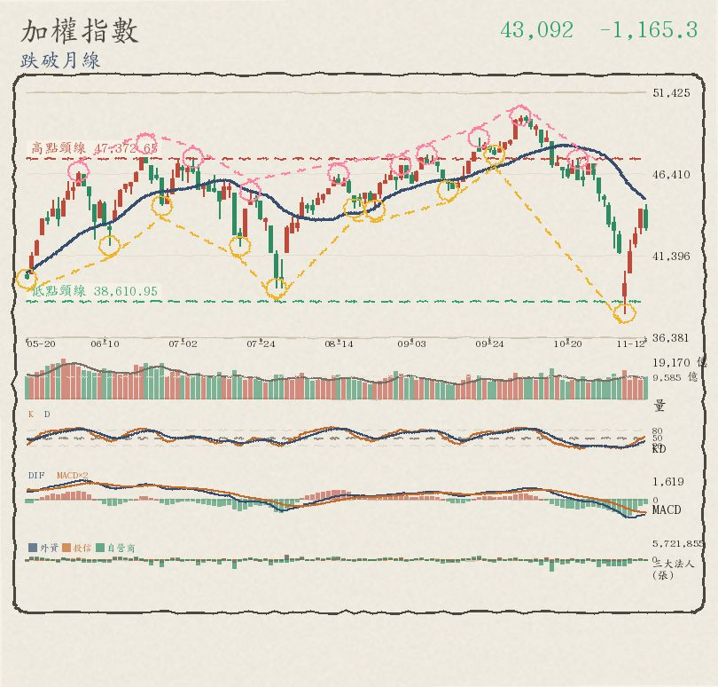
圖說：加權指數日 K（與個股圖相同標記）：黃圈＝轉折低點、粉圈＝轉折高點、虛線小圈＝還沒確認的轉折、藍線＝月線 MA20、水平虛線＝高點／低點頸線。最後一根是資料日當天。
本區塊為公開資料的技術面觀察，不構成投資建議，
不報牌、不預測、不下買賣決策。成交金額為集中市場總成交金額（含 ETF／權證），
與頁首摘要的「上市個股成交金額」口徑不同。標籤是統計，不是評分、也不是推薦。
上市 vs 上櫃（同期快篩）
加權 -2.63% vs 櫃買 -2.44%（同向） → 同向
（兩個市場分開寫，不合併成一個數字；櫃買為 TPEX 公開資料）
櫃買歷史：TPEX 逐日回補 130 根；來源：櫃買中心 www/zh-tw/indexInfo/sectinx（逐日，官方；OpenAPI tpex_index 只回當月）
（TPEX OpenAPI 只回當月，故逐日回補；歷史不足就不算該條均線並標「資料不足」，不用錯數字）
近 20 個交易日大盤狀態回溯（最新在上）（點開看逐日主狀態／量比／量價象限）
用同一支程式回算最近 20 個交易日（主狀態 S1~S8 與量比 20 皆為當日收盤當時的判定，
不是事後調整）；量比 20 未公布的日子寫「—」。
好條件最多的（前 10）
不好條件最多的（前 10）
本期市場狀態：空頭（等權指數在 60 日均線之下）（空頭期間：趨勢類條件反向（回測後 20 日差距 −0.9% ~ −2.1%），本排行改用超跌反轉類（跌破前低／在月線之下／月線下彎））
好條件（4 項）：跌破前低、在月線之下、月線下彎、外資買超。
不好條件（5 項）：站上月線、月線向上、突破頸線、量價攻擊（收紅＋大量）、外資賣超。
兩邊都是同一組資料（日線結構＋當日收盤量價籌碼）算出來的「符合項目數」，只是方向相反；
條件數不是評分、也不是推薦，不構成投資建議。
量價攻擊（收紅＋大量）（13 上市 8／上櫃 5）
逐檔分析（70 檔）
區間或轉弱 成交金額 812.83 億・全榜第 1 名（上市第 1 名）
好條件 2/4：在月線之下、月線下彎
不好條件 1/5：外資賣超
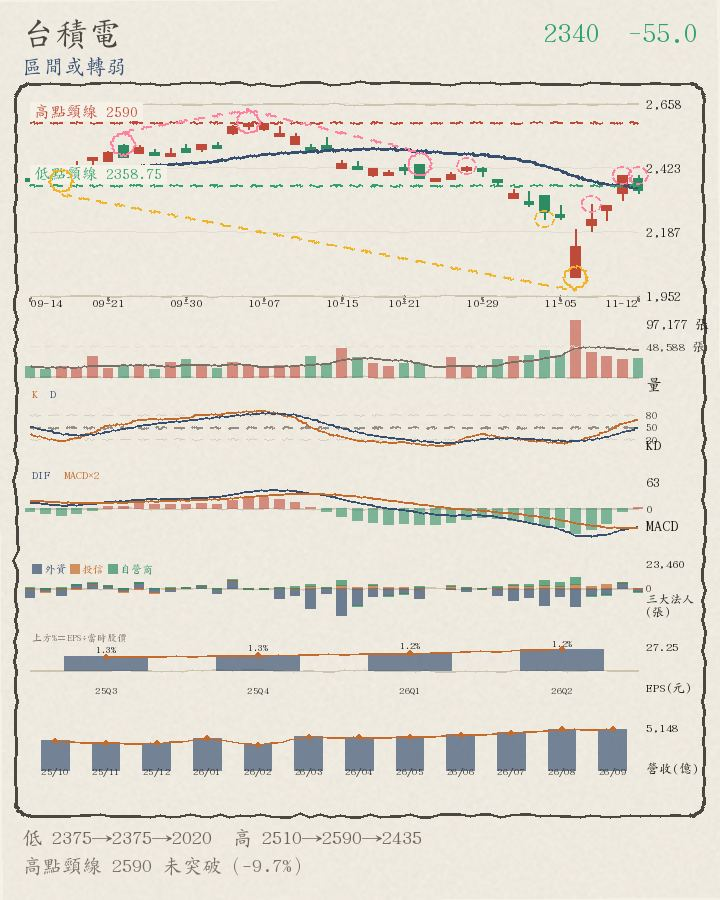
今天收黑、成交量也比平均少、跌破月線 2350，離高點頸線 2590 還差 9.7%，轉折還沒走出明顯方向。
- 月線位置：收盤 2340 在月線 2350 之下；5 日線 2278 也在月線之下（短均在下）；月線走平或向下、5 日線走平或向下
- 量能：成交量是 20 日均量的 0.91 倍，比 20 日均量少一些
- 關鍵價位：高點頸線 2590 還沒突破，差 9.7%；最近轉折高點 2435（低於 3.9%）；最近轉折低點 2020（高於 15.8%）
- 轉折結構：低點 2375、2375、2020 與高點 2510、2590、2435 都沒有明顯遞增，屬於區間震盪或轉弱；還沒確認的轉折低點 11-04 2235；還沒確認的轉折高點 11-11 2395、11-12 2395（圖上虛線小圈）
區間或轉弱 成交金額 518 億・全榜第 2 名（上市第 2 名）
好條件 3/4：在月線之下、月線下彎、外資買超
不好條件 0/5：無
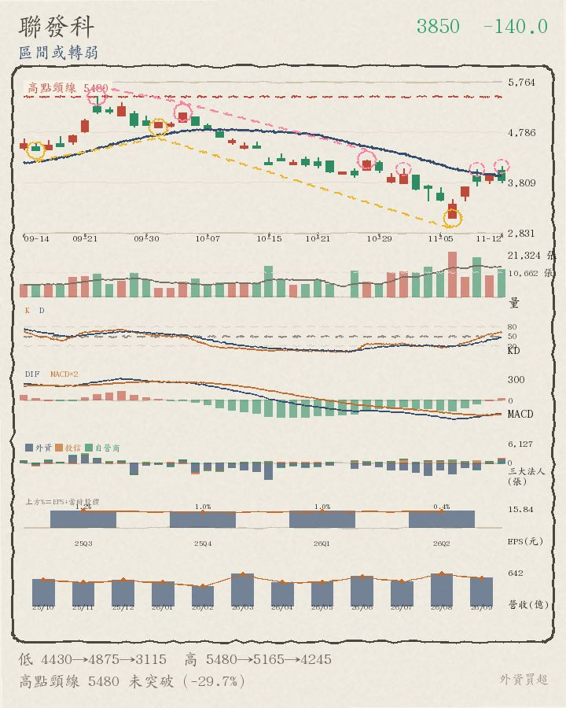
今天帶量收黑、跌破月線 3934.5，離高點頸線 5480 還差 29.7%，轉折還沒走出明顯方向。
- 月線位置：收盤 3850 在月線 3934.5 之下；5 日線 3757 也在月線之下（短均在下）；月線走平或向下、5 日線向上
- 量能：成交量是 20 日均量的 1.24 倍，比 20 日均量大不少；收黑卻量增，量價背離
- 關鍵價位：高點頸線 5480 還沒突破，差 29.7%；最近轉折高點 4245（低於 9.3%）；最近轉折低點 3115（高於 23.6%）
- 轉折結構：低點 4430、4875、3115 與高點 5480、5165、4245 都沒有明顯遞增，屬於區間震盪或轉弱；還沒確認的轉折高點 11-10 4065、11-12 4120（圖上虛線小圈）
剛突破前高 成交金額 470.7 億・全榜第 3 名（上市第 3 名）
好條件 2/4：在月線之下、月線下彎
不好條件 1/5：外資賣超

今天帶量收黑、跌破月線 293.15，離高點頸線 350.5 還差 16.4%，高點還在墊高（但底部沒同步墊高）。
- 月線位置：收盤 293 在月線 293.15 之下；5 日線 279.5 也在月線之下（短均在下）；月線走平或向下、5 日線向上
- 量能：成交量是 20 日均量的 1.44 倍，比 20 日均量大不少；收黑卻量增，量價背離
- 關鍵價位：高點頸線 350.5 還沒突破，差 16.4%；最近轉折高點 325（低於 9.8%）；最近轉折低點 224.5（高於 30.5%）
- 轉折結構：高點 350.5、325.5、325 墊高 0.2%（頭頭高），但低點 223、295、224.5 沒有同步墊高；還沒確認的轉折高點 11-02 308、11-12 325.5（圖上虛線小圈）
剛突破前高 成交金額 400.93 億・全榜第 4 名（上市第 4 名）
好條件 1/4：外資買超
不好條件 4/5：站上月線、月線向上、突破頸線、量價攻擊（收紅＋大量）
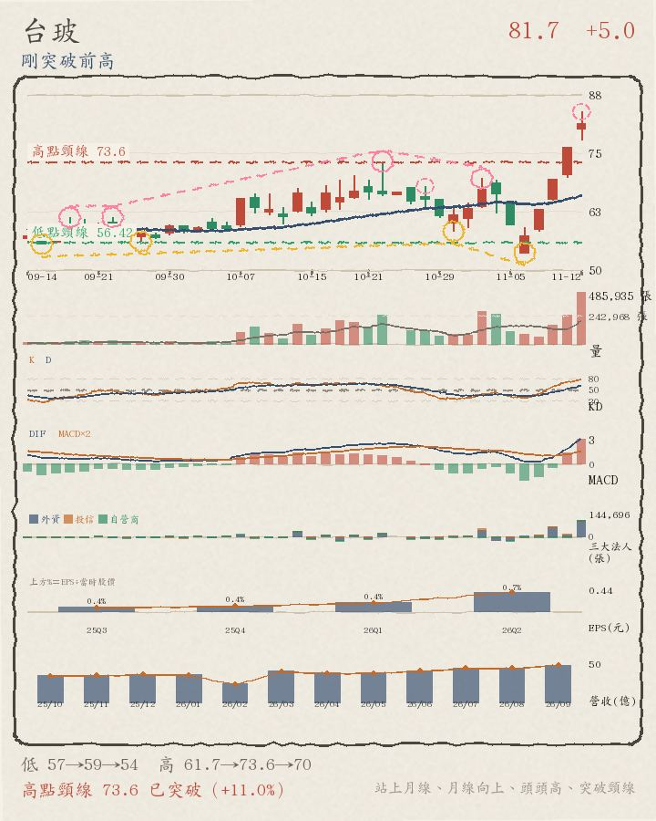
今天帶量收紅、站上月線 66.36，已站上高點頸線 73.6，高點還在墊高（但底部沒同步墊高）。
- 月線位置：收盤 81.7 在月線 66.36 之上；5 日線 69.9 也在月線之上（短均在上）；月線向上、5 日線向上
- 量能：成交量是 20 日均量的 3.08 倍，比 20 日均量大不少；收紅又量增，量價配合
- 關鍵價位：高點頸線 73.6 已站上；最近轉折高點 70（高於 16.7%）；最近轉折低點 54.1（高於 51.0%）
- 轉折結構：高點 61.7、73.6、70 墊高 20.4%（頭頭高），但低點 56.6、58.8、54.1 沒有同步墊高；還沒確認的轉折高點 10-28 68.4、11-12 84.3（圖上虛線小圈）
剛突破前高 成交金額 296.19 億・全榜第 6 名（上市第 5 名）
好條件 2/4：月線下彎、外資買超
不好條件 1/5：站上月線
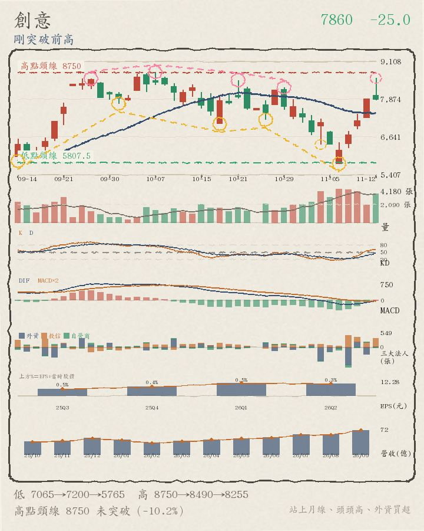
今天帶量收黑、站上月線 7409.75，離高點頸線 8750 還差 10.2%，高點還在墊高（但底部沒同步墊高）。
- 月線位置：收盤 7860 在月線 7409.75 之上；5 日線 7165 也在月線之下（短均在下）；月線走平或向下、5 日線向上
- 量能：成交量是 20 日均量的 1.50 倍，比 20 日均量大不少；收黑卻量增，量價背離
- 關鍵價位：高點頸線 8750 還沒突破，差 10.2%；最近轉折高點 8255（低於 4.8%）；最近轉折低點 5765（高於 36.3%）
- 轉折結構：高點 8750、8490、8255 墊高 3.6%（頭頭高），但低點 7065、7200、5765 沒有同步墊高；還沒確認的轉折低點 11-04 6390；還沒確認的轉折高點 11-12 8555（圖上虛線小圈）
區間或轉弱 成交金額 243.1 億・全榜第 7 名（上市第 6 名）
好條件 3/4：在月線之下、月線下彎、外資買超
不好條件 0/5：無

今天帶量收黑、跌破月線 417.8，離高點頸線 537 還差 29.3%，轉折還沒走出明顯方向。
- 月線位置：收盤 379.5 在月線 417.8 之下；5 日線 374 也在月線之下（短均在下）；月線走平或向下、5 日線走平或向下
- 量能：成交量是 20 日均量的 1.24 倍，比 20 日均量大不少；收黑卻量增，量價背離
- 關鍵價位：高點頸線 537 還沒突破，差 29.3%；最近轉折高點 497.5（低於 23.7%）；最近轉折低點 324（高於 17.1%）
- 轉折結構：低點 488、412、324 與高點 533、537、497.5 都沒有明顯遞增，屬於區間震盪或轉弱；還沒確認的轉折高點 11-10 402、11-12 417（圖上虛線小圈）
區間或轉弱 成交金額 241.94 億・全榜第 8 名（上市第 7 名）
好條件 2/4：在月線之下、月線下彎
不好條件 1/5：外資賣超
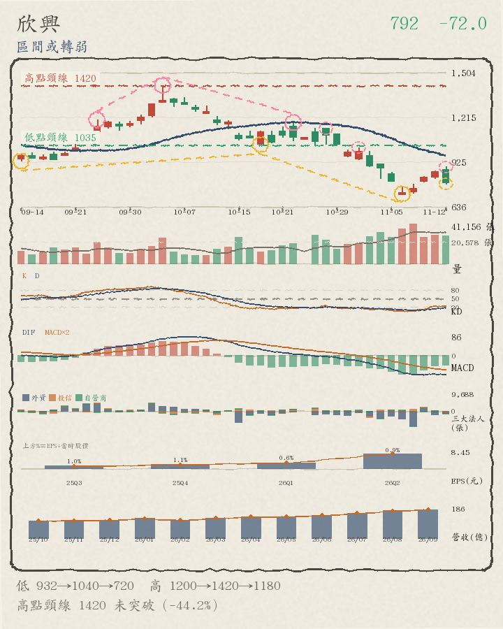
今天帶量收黑、跌破月線 967.7，離高點頸線 1420 還差 44.2%，轉折還沒走出明顯方向。
- 月線位置：收盤 792 在月線 967.7 之下；5 日線 793.6 也在月線之下（短均在下）；月線走平或向下、5 日線走平或向下
- 量能：成交量是 20 日均量的 1.20 倍，比 20 日均量大不少；收黑卻量增，量價背離
- 關鍵價位：高點頸線 1420 還沒突破，差 44.2%；最近轉折高點 1180（低於 32.9%）；最近轉折低點 720（高於 10.0%）
- 轉折結構：低點 932、1040、720 與高點 1200、1420、1180 都沒有明顯遞增，屬於區間震盪或轉弱；還沒確認的轉折低點 11-12 785；還沒確認的轉折高點 11-02 1020、11-12 894（圖上虛線小圈）
高點墊高、底部不穩 成交金額 240.9 億・全榜第 9 名（上市第 8 名）
好條件 2/4：在月線之下、月線下彎
不好條件 1/5：外資賣超
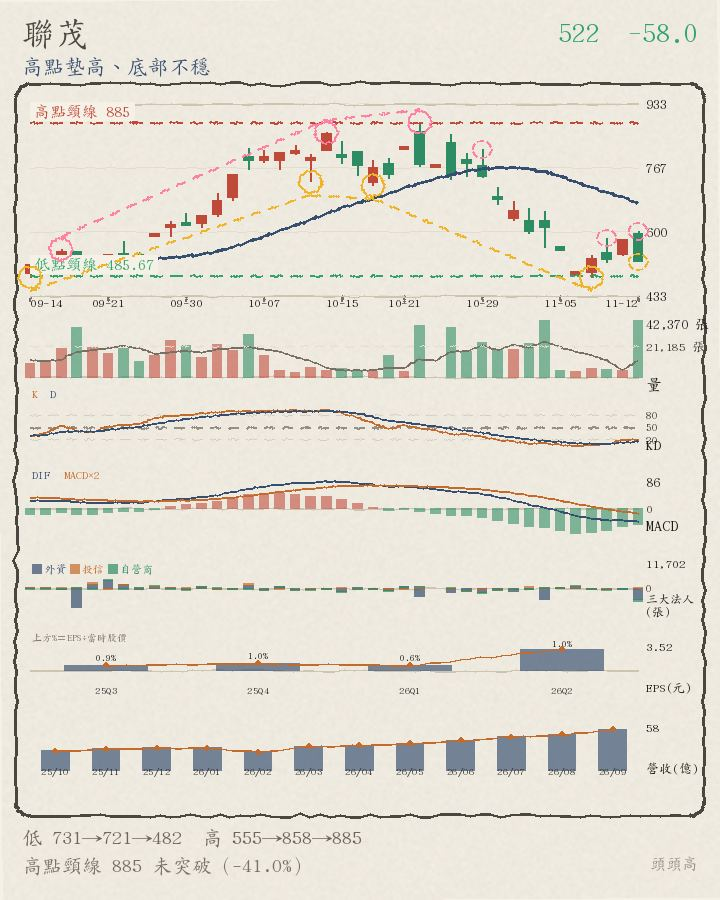
今天帶量收黑、跌破月線 674.9，離高點頸線 885 還差 41.0%，高點還在墊高（但底部沒同步墊高）。
- 月線位置：收盤 522 在月線 674.9 之下；5 日線 531.4 也在月線之下（短均在下）；月線走平或向下、5 日線走平或向下
- 量能：成交量是 20 日均量的 2.71 倍，比 20 日均量大不少；收黑卻量增，量價背離
- 關鍵價位：高點頸線 885 還沒突破，差 41.0%；最近轉折高點 885（低於 41.0%）；最近轉折低點 481.5（高於 8.4%）
- 轉折結構：高點 555、858、885 墊高 59.5%（頭頭高），但低點 731、721、481.5 沒有同步墊高；還沒確認的轉折低點 11-12 522；還沒確認的轉折高點 11-10 584、11-12 602（圖上虛線小圈）
區間或轉弱 成交金額 205.93 億・全榜第 11 名（上市第 9 名）
好條件 2/4：在月線之下、月線下彎
不好條件 1/5：外資賣超
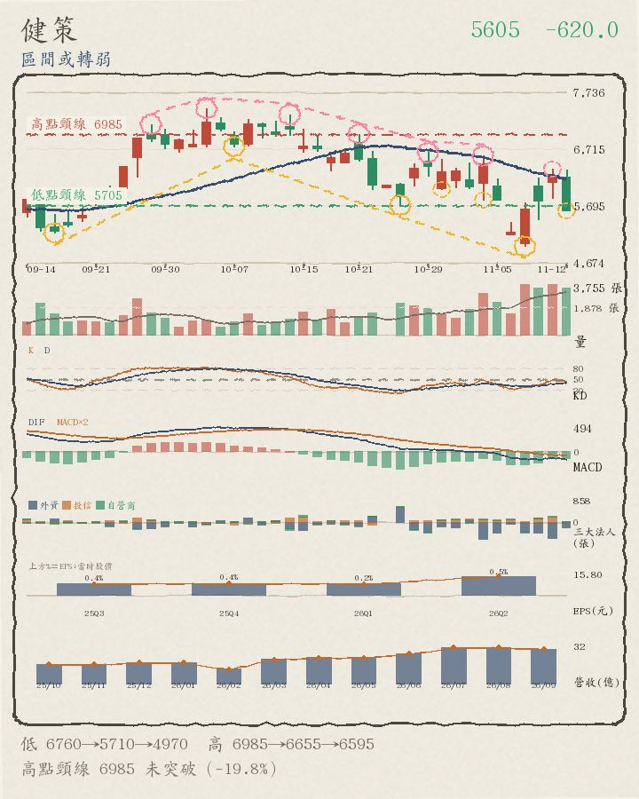
今天帶量收黑、跌破月線 6171.25，離高點頸線 6985 還差 19.8%，轉折還沒走出明顯方向。
- 月線位置：收盤 5605 在月線 6171.25 之下；5 日線 5696 也在月線之下（短均在下）；月線走平或向下、5 日線走平或向下
- 量能：成交量是 20 日均量的 1.69 倍，比 20 日均量大不少；收黑卻量增，量價背離
- 關鍵價位：高點頸線 6985 還沒突破，差 19.8%；最近轉折高點 6595（低於 15.0%）；最近轉折低點 4970（高於 12.8%）
- 轉折結構：低點 6760、5710、4970 與高點 6985、6655、6595 都沒有明顯遞增，屬於區間震盪或轉弱；還沒確認的轉折低點 11-04 5800、11-12 5605；還沒確認的轉折高點 11-11 6360（圖上虛線小圈）
剛突破前高 成交金額 202.85 億・全榜第 12 名（上市第 10 名）
好條件 2/4：月線下彎、外資買超
不好條件 2/5：站上月線、量價攻擊（收紅＋大量）
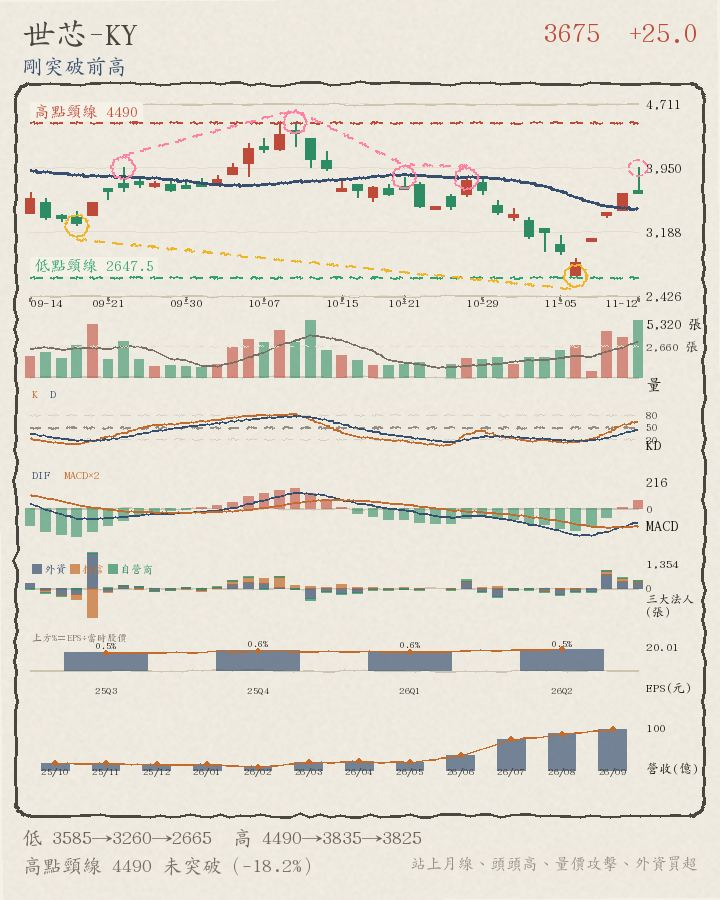
今天帶量收紅、站上月線 3460.25，離高點頸線 4490 還差 18.2%，高點還在墊高（但底部沒同步墊高）。
- 月線位置：收盤 3675 在月線 3460.25 之上；5 日線 3337 也在月線之下（短均在下）；月線走平或向下、5 日線向上
- 量能：成交量是 20 日均量的 2.83 倍，比 20 日均量大不少；收紅又量增，量價配合
- 關鍵價位：高點頸線 4490 還沒突破，差 18.2%；最近轉折高點 3825（低於 3.9%）；最近轉折低點 2665（高於 37.9%）
- 轉折結構：高點 4490、3835、3825 墊高 3.3%（頭頭高），但低點 3585、3260、2665 沒有同步墊高；還沒確認的轉折高點 11-12 3950（圖上虛線小圈）
高點墊高、底部不穩 成交金額 201.68 億・全榜第 13 名（上市第 11 名）
好條件 2/4：在月線之下、月線下彎
不好條件 1/5：外資賣超
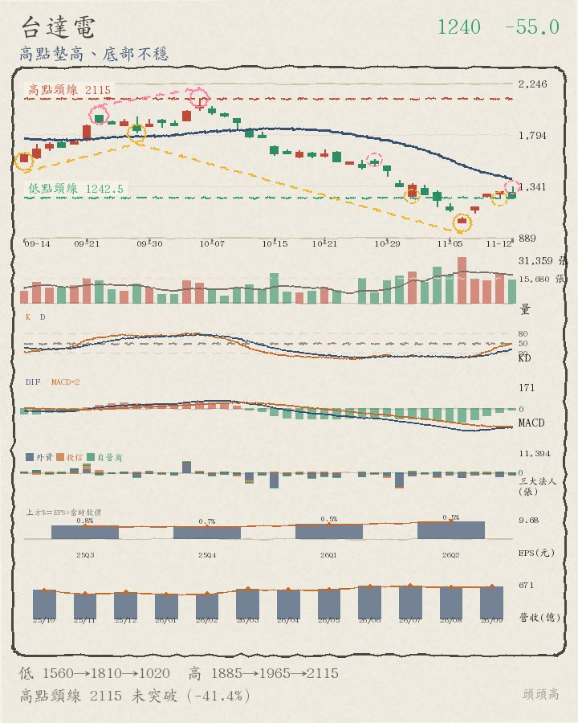
今天收黑、跌破月線 1406.5，離高點頸線 2115 還差 41.4%，高點還在墊高（但底部沒同步墊高）。
- 月線位置：收盤 1240 在月線 1406.5 之下；5 日線 1205 也在月線之下（短均在下）；月線走平或向下、5 日線走平或向下
- 量能：成交量是 20 日均量的 1.03 倍，跟 20 日均量差不多
- 關鍵價位：高點頸線 2115 還沒突破，差 41.4%；最近轉折高點 2115（低於 41.4%）；最近轉折低點 1020（高於 21.6%）
- 轉折結構：高點 1885、1965、2115 墊高 12.2%（頭頭高），但低點 1560、1810、1020 沒有同步墊高；還沒確認的轉折低點 11-02 1255、11-11 1230；還沒確認的轉折高點 10-28 1575、11-12 1335（圖上虛線小圈）
區間或轉弱 成交金額 199.76 億・全榜第 14 名（上市第 12 名）
好條件 3/4：在月線之下、月線下彎、外資買超
不好條件 0/5：無
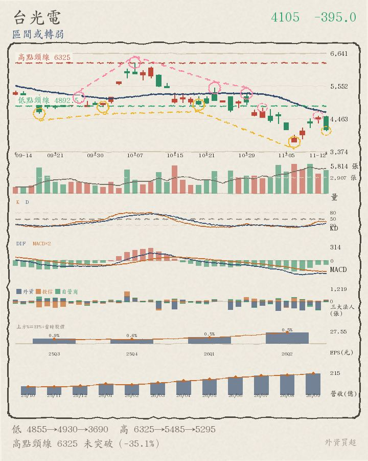
今天帶量收黑、跌破月線 4678，離高點頸線 6325 還差 35.1%，轉折還沒走出明顯方向。
- 月線位置：收盤 4105 在月線 4678 之下；5 日線 4172 也在月線之下（短均在下）；月線走平或向下、5 日線走平或向下
- 量能：成交量是 20 日均量的 1.23 倍，比 20 日均量大不少；收黑卻量增，量價背離
- 關鍵價位：高點頸線 6325 還沒突破，差 35.1%；最近轉折高點 5295（低於 22.5%）；最近轉折低點 3690（高於 11.2%）
- 轉折結構：低點 4855、4930、3690 與高點 6325、5485、5295 都沒有明顯遞增，屬於區間震盪或轉弱；還沒確認的轉折低點 11-12 4065；還沒確認的轉折高點 11-02 4835、11-11 4565（圖上虛線小圈）
區間或轉弱 成交金額 159.33 億・全榜第 15 名（上市第 13 名）
好條件 3/4：在月線之下、月線下彎、外資買超
不好條件 0/5：無

今天收黑、成交量也比平均少、跌破月線 485.2，離高點頸線 686 還差 40.7%，轉折還沒走出明顯方向。
- 月線位置：收盤 407 在月線 485.2 之下；5 日線 406.6 也在月線之下（短均在下）；月線走平或向下、5 日線走平或向下
- 量能：成交量是 20 日均量的 0.92 倍，比 20 日均量少一些
- 關鍵價位：高點頸線 686 還沒突破，差 40.7%；最近轉折高點 686（低於 40.7%）；最近轉折低點 364.5（高於 11.7%）
- 轉折結構：低點 548、506、364.5 與高點 605、601、686 都沒有明顯遞增，屬於區間震盪或轉弱；還沒確認的轉折低點 11-12 405.5；還沒確認的轉折高點 11-10 442、11-12 441（圖上虛線小圈）
區間或轉弱 成交金額 143.48 億・全榜第 18 名（上市第 14 名）
好條件 2/4：在月線之下、月線下彎
不好條件 1/5：外資賣超
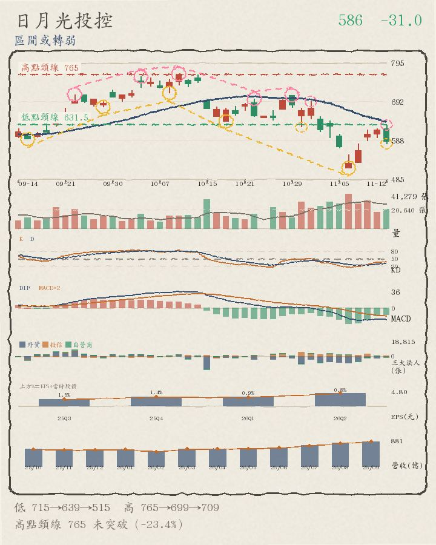
今天收黑、跌破月線 637.4，離高點頸線 765 還差 23.4%，轉折還沒走出明顯方向。
- 月線位置：收盤 586 在月線 637.4 之下；5 日線 579.2 也在月線之下（短均在下）；月線走平或向下、5 日線走平或向下
- 量能：成交量是 20 日均量的 0.98 倍，跟 20 日均量差不多
- 關鍵價位：高點頸線 765 還沒突破，差 23.4%；最近轉折高點 709（低於 17.3%）；最近轉折低點 515（高於 13.8%）
- 轉折結構：低點 715、639、515 與高點 765、699、709 都沒有明顯遞增，屬於區間震盪或轉弱；還沒確認的轉折低點 10-30 624、11-12 580；還沒確認的轉折高點 11-02 692、11-12 630（圖上虛線小圈）
區間或轉弱 成交金額 137.94 億・全榜第 19 名（上市第 15 名）
好條件 2/4：在月線之下、月線下彎
不好條件 1/5：外資賣超
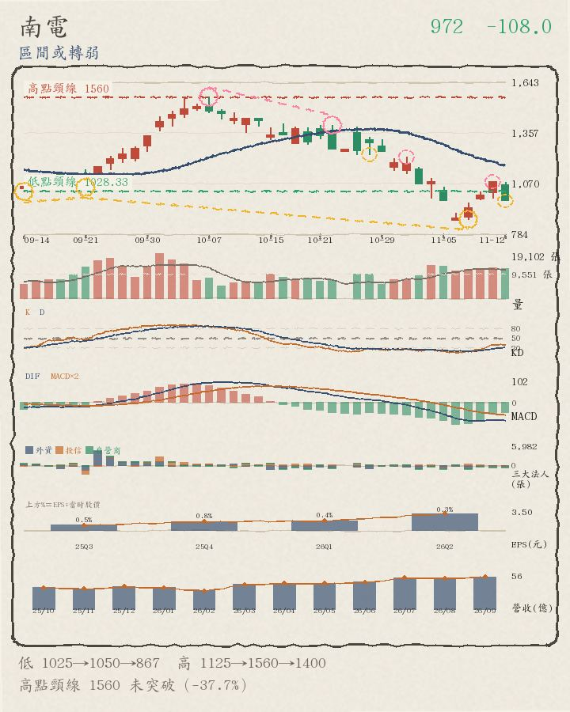
今天帶量收黑、跌破月線 1171.1，離高點頸線 1560 還差 37.7%，轉折還沒走出明顯方向。
- 月線位置：收盤 972 在月線 1171.1 之下；5 日線 973 也在月線之下（短均在下）；月線走平或向下、5 日線走平或向下
- 量能：成交量是 20 日均量的 1.29 倍，比 20 日均量大不少；收黑卻量增，量價背離
- 關鍵價位：高點頸線 1560 還沒突破，差 37.7%；最近轉折高點 1400（低於 30.6%）；最近轉折低點 867（高於 12.1%）
- 轉折結構：低點 1025、1050、867 與高點 1125、1560、1400 都沒有明顯遞增，屬於區間震盪或轉弱；還沒確認的轉折低點 10-28 1235、11-12 972；還沒確認的轉折高點 11-02 1220、11-11 1080（圖上虛線小圈）
區間或轉弱 成交金額 129.57 億・全榜第 20 名（上市第 16 名）
好條件 2/4：在月線之下、月線下彎
不好條件 1/5：外資賣超
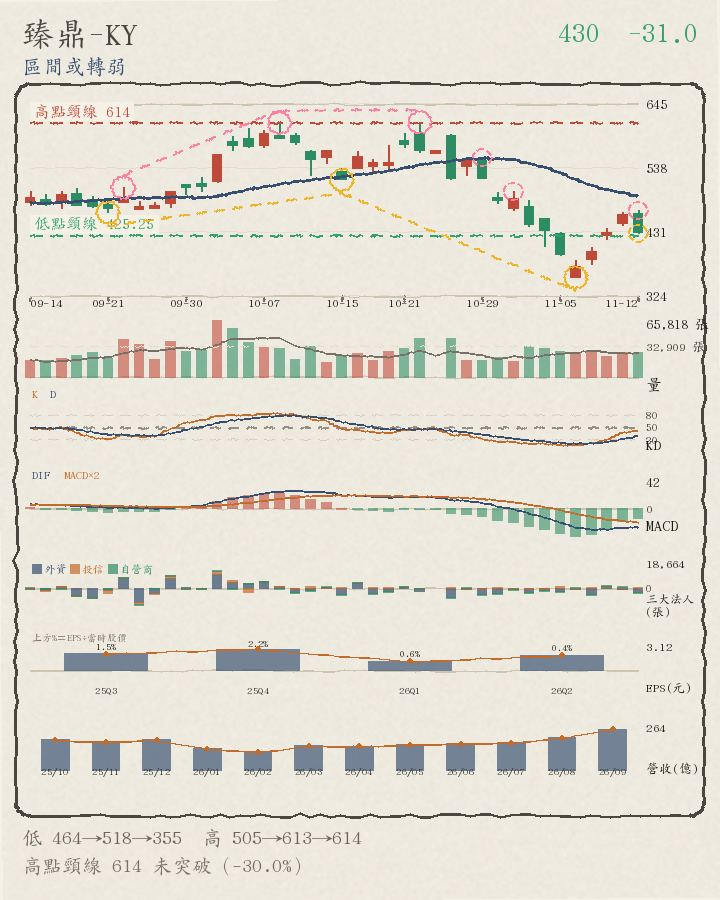
今天收黑、跌破月線 490.375，離高點頸線 614 還差 30.0%，轉折還沒走出明顯方向。
- 月線位置：收盤 430 在月線 490.375 之下；5 日線 418.5 也在月線之下（短均在下）；月線走平或向下、5 日線走平或向下
- 量能：成交量是 20 日均量的 1.04 倍，跟 20 日均量差不多
- 關鍵價位：高點頸線 614 還沒突破，差 30.0%；最近轉折高點 614（低於 30.0%）；最近轉折低點 355（高於 21.1%）
- 轉折結構：低點 463.5、518、355 與高點 505、613、614 都沒有明顯遞增，屬於區間震盪或轉弱；還沒確認的轉折低點 11-12 429；還沒確認的轉折高點 11-02 499、11-12 466.5（圖上虛線小圈）
區間或轉弱 成交金額 126.67 億・全榜第 21 名（上市第 17 名）
好條件 3/4：在月線之下、月線下彎、外資買超
不好條件 1/5：量價攻擊（收紅＋大量）
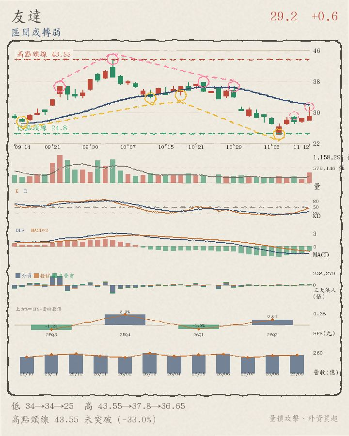
今天帶量收紅、跌破月線 32.06，離高點頸線 43.55 還差 33.0%，轉折還沒走出明顯方向。
- 月線位置：收盤 29.2 在月線 32.06 之下；5 日線 28.06 也在月線之下（短均在下）；月線走平或向下、5 日線走平或向下
- 量能：成交量是 20 日均量的 1.55 倍，比 20 日均量大不少；收紅又量增，量價配合
- 關鍵價位：高點頸線 43.55 還沒突破，差 33.0%；最近轉折高點 36.65（低於 20.3%）；最近轉折低點 24.55（高於 18.9%）
- 轉折結構：低點 33.75、34.45、24.55 與高點 43.55、37.8、36.65 都沒有明顯遞增，屬於區間震盪或轉弱；還沒確認的轉折高點 11-10 29.25、11-12 31.5（圖上虛線小圈）
區間或轉弱 成交金額 125.18 億・全榜第 22 名（上市第 18 名）
好條件 3/4：在月線之下、月線下彎、外資買超
不好條件 0/5：無
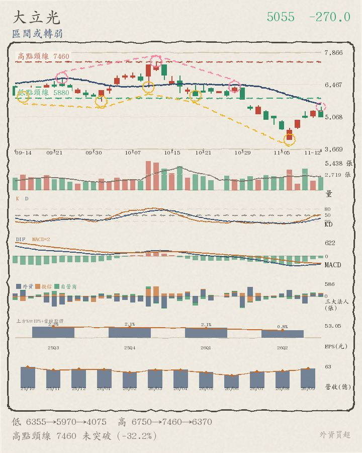
今天收黑、成交量也比平均少、跌破月線 5607.25，離高點頸線 7460 還差 32.2%，轉折還沒走出明顯方向。
- 月線位置：收盤 5055 在月線 5607.25 之下；5 日線 4970 也在月線之下（短均在下）；月線走平或向下、5 日線走平或向下
- 量能：成交量是 20 日均量的 0.90 倍，比 20 日均量少一些
- 關鍵價位：高點頸線 7460 還沒突破，差 32.2%；最近轉折高點 6370（低於 20.6%）；最近轉折低點 4075（高於 24.0%）
- 轉折結構：低點 6355、5970、4075 與高點 6750、7460、6370 都沒有明顯遞增，屬於區間震盪或轉弱；還沒確認的轉折高點 11-12 5490（圖上虛線小圈）
區間或轉弱 成交金額 122.57 億・全榜第 23 名（上市第 19 名）
好條件 3/4：在月線之下、月線下彎、外資買超
不好條件 0/5：無
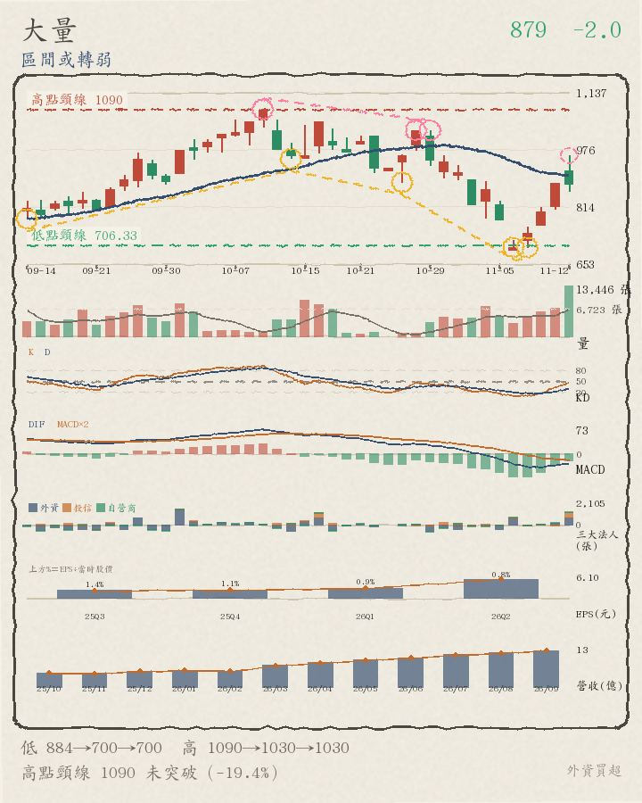
今天帶量收黑、跌破月線 903.7，離高點頸線 1090 還差 19.4%，轉折還沒走出明顯方向。
- 月線位置：收盤 879 在月線 903.7 之下；5 日線 800 也在月線之下（短均在下）；月線走平或向下、5 日線走平或向下
- 量能：成交量是 20 日均量的 2.92 倍，比 20 日均量大不少；收黑卻量增，量價背離
- 關鍵價位：高點頸線 1090 還沒突破，差 19.4%；最近轉折高點 1030（低於 14.7%）；最近轉折低點 700（高於 25.6%）
- 轉折結構：低點 884、700、700 與高點 1090、1030、1030 都沒有明顯遞增，屬於區間震盪或轉弱；還沒確認的轉折高點 11-12 960（圖上虛線小圈）
區間或轉弱 成交金額 120.6 億・全榜第 24 名（上市第 20 名）
好條件 2/4：在月線之下、月線下彎
不好條件 1/5：外資賣超
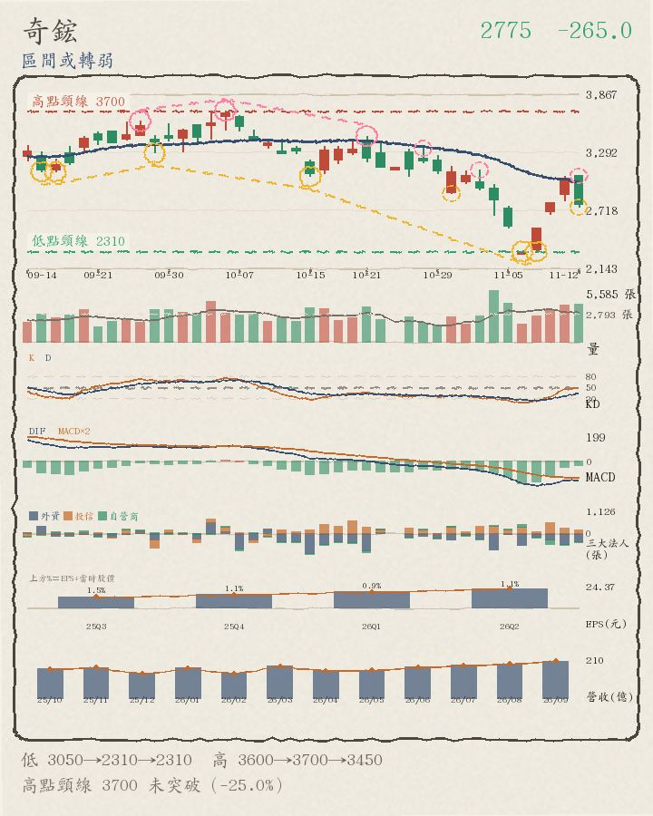
今天帶量收黑、跌破月線 2997.5，離高點頸線 3700 還差 25.0%，轉折還沒走出明顯方向。
- 月線位置：收盤 2775 在月線 2997.5 之下；5 日線 2691 也在月線之下（短均在下）；月線走平或向下、5 日線走平或向下
- 量能：成交量是 20 日均量的 1.38 倍，比 20 日均量大不少；收黑卻量增，量價背離
- 關鍵價位：高點頸線 3700 還沒突破，差 25.0%；最近轉折高點 3450（低於 19.6%）；最近轉折低點 2310（高於 20.1%）
- 轉折結構：低點 3050、2310、2310 與高點 3600、3700、3450 都沒有明顯遞增，屬於區間震盪或轉弱；還沒確認的轉折低點 10-30 2885、11-12 2750；還沒確認的轉折高點 11-03 3115、11-12 3060（圖上虛線小圈）
高點墊高、底部不穩 成交金額 117.8 億・全榜第 25 名（上市第 21 名）
好條件 3/4：在月線之下、月線下彎、外資買超
不好條件 1/5：量價攻擊（收紅＋大量）
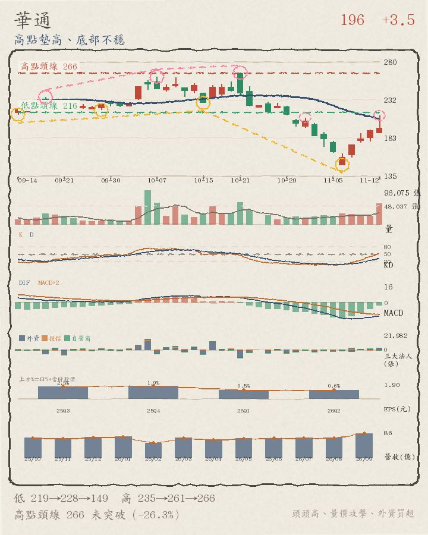
今天帶量收紅、跌破月線 207.8，離高點頸線 266 還差 26.3%，高點還在墊高（但底部沒同步墊高）。
- 月線位置：收盤 196 在月線 207.8 之下；5 日線 180.9 也在月線之下（短均在下）；月線走平或向下、5 日線走平或向下
- 量能：成交量是 20 日均量的 2.08 倍，比 20 日均量大不少；收紅又量增，量價配合
- 關鍵價位：高點頸線 266 還沒突破，差 26.3%；最近轉折高點 266（低於 26.3%）；最近轉折低點 149（高於 31.5%）
- 轉折結構：高點 235、261、266 墊高 13.2%（頭頭高），但低點 219、228、149 沒有同步墊高；還沒確認的轉折高點 11-02 209、11-12 211.5（圖上虛線小圈）
區間或轉弱 成交金額 116.1 億・全榜第 26 名（上市第 22 名）
好條件 3/4：在月線之下、月線下彎、外資買超
不好條件 0/5：無
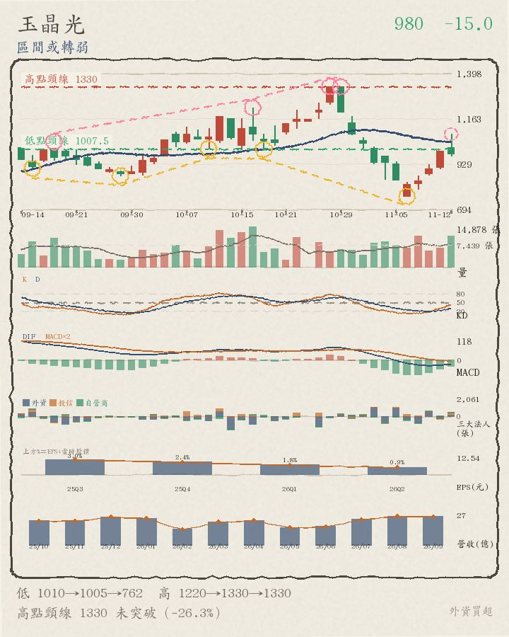
今天帶量收黑、跌破月線 1043.6，離高點頸線 1330 還差 26.3%，轉折還沒走出明顯方向。
- 月線位置：收盤 980 在月線 1043.6 之下；5 日線 909.2 也在月線之下（短均在下）；月線走平或向下、5 日線走平或向下
- 量能：成交量是 20 日均量的 1.42 倍，比 20 日均量大不少；收黑卻量增，量價背離
- 關鍵價位：高點頸線 1330 還沒突破，差 26.3%；最近轉折高點 1330（低於 26.3%）；最近轉折低點 762（高於 28.6%）
- 轉折結構：低點 1010、1005、762 與高點 1220、1330、1330 都沒有明顯遞增，屬於區間震盪或轉弱；還沒確認的轉折高點 11-12 1085（圖上虛線小圈）
區間或轉弱 成交金額 115.28 億・全榜第 28 名（上市第 23 名）
好條件 2/4：在月線之下、月線下彎
不好條件 1/5：外資賣超
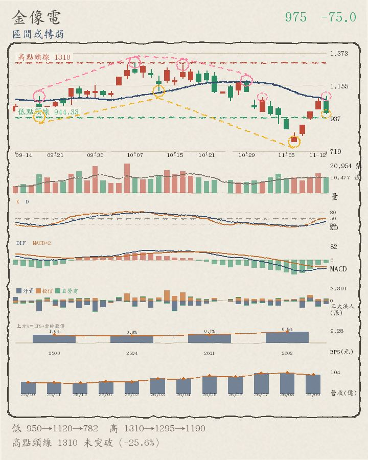
今天收黑、跌破月線 1063.6，離高點頸線 1310 還差 25.6%，轉折還沒走出明顯方向。
- 月線位置：收盤 975 在月線 1063.6 之下；5 日線 943 也在月線之下（短均在下）；月線走平或向下、5 日線走平或向下
- 量能：成交量是 20 日均量的 1.04 倍，跟 20 日均量差不多
- 關鍵價位：高點頸線 1310 還沒突破，差 25.6%；最近轉折高點 1190（低於 18.1%）；最近轉折低點 782（高於 24.7%）
- 轉折結構：低點 950、1120、782 與高點 1310、1295、1190 都沒有明顯遞增，屬於區間震盪或轉弱；還沒確認的轉折低點 11-12 968；還沒確認的轉折高點 11-02 1080、11-12 1085（圖上虛線小圈）
區間或轉弱 成交金額 112.76 億・全榜第 29 名（上市第 24 名）
好條件 3/4：在月線之下、月線下彎、外資買超
不好條件 0/5：無
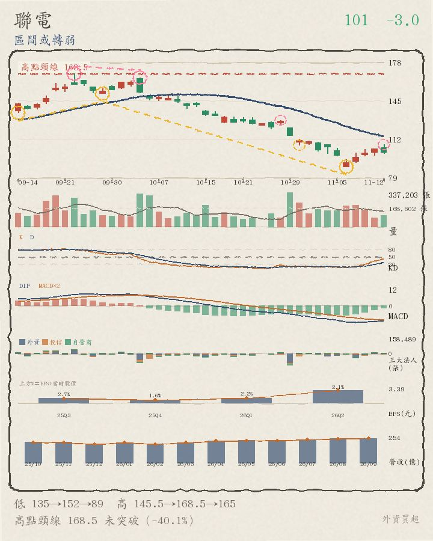
今天收黑、成交量也比平均少、跌破月線 114.63，離高點頸線 168.5 還差 40.1%，轉折還沒走出明顯方向。
- 月線位置：收盤 101 在月線 114.63 之下；5 日線 98.84 也在月線之下（短均在下）；月線走平或向下、5 日線走平或向下
- 量能：成交量是 20 日均量的 0.72 倍，比 20 日均量少很多
- 關鍵價位：高點頸線 168.5 還沒突破，差 40.1%；最近轉折高點 165（低於 38.8%）；最近轉折低點 88.6（高於 14.0%）
- 轉折結構：低點 135、151.5、88.6 與高點 145.5、168.5、165 都沒有明顯遞增，屬於區間震盪或轉弱；還沒確認的轉折低點 10-30 107；還沒確認的轉折高點 10-28 128.5、11-12 107.5（圖上虛線小圈）
區間或轉弱 成交金額 112.65 億・全榜第 30 名（上市第 25 名）
好條件 2/4：在月線之下、月線下彎
不好條件 1/5：外資賣超
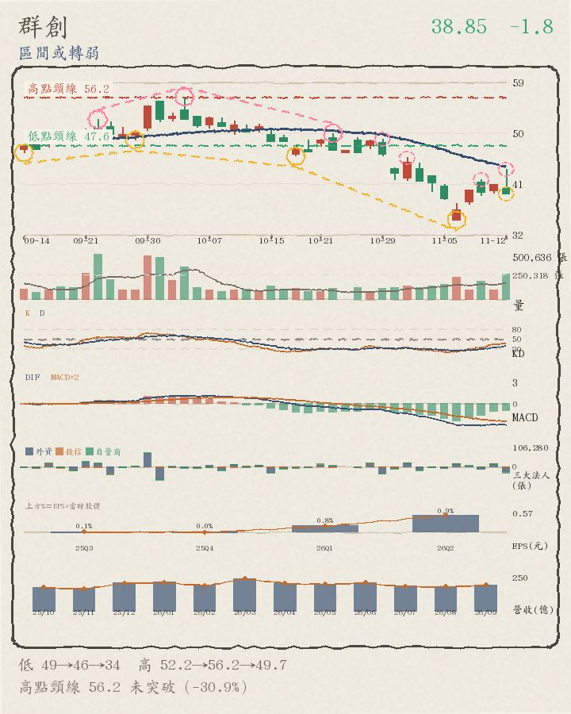
今天帶量收黑、跌破月線 43.727，離高點頸線 56.2 還差 30.9%，轉折還沒走出明顯方向。
- 月線位置：收盤 38.85 在月線 43.727 之下；5 日線 38.87 也在月線之下（短均在下）；月線走平或向下、5 日線走平或向下
- 量能：成交量是 20 日均量的 2.14 倍，比 20 日均量大不少；收黑卻量增，量價背離
- 關鍵價位：高點頸線 56.2 還沒突破，差 30.9%；最近轉折高點 49.7（低於 21.8%）；最近轉折低點 34.2（高於 13.6%）
- 轉折結構：低點 48.55、45.65、34.2 與高點 52.2、56.2、49.7 都沒有明顯遞增，屬於區間震盪或轉弱；還沒確認的轉折低點 11-12 38.85；還沒確認的轉折高點 11-10 41.4、11-12 43.3（圖上虛線小圈）
區間或轉弱 成交金額 104.4 億・全榜第 32 名（上市第 26 名）
好條件 2/4：在月線之下、月線下彎
不好條件 1/5：外資賣超
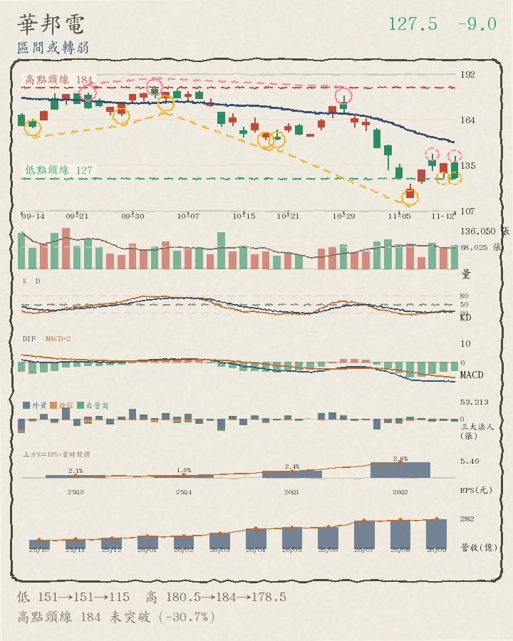
今天帶量收黑、跌破月線 149.6，離高點頸線 184 還差 30.7%，轉折還沒走出明顯方向。
- 月線位置：收盤 127.5 在月線 149.6 之下；5 日線 130.4 也在月線之下（短均在下）；月線走平或向下、5 日線走平或向下
- 量能：成交量是 20 日均量的 1.19 倍，比 20 日均量大不少；收黑卻量增，量價背離
- 關鍵價位：高點頸線 184 還沒突破，差 30.7%；最近轉折高點 178.5（低於 28.6%）；最近轉折低點 115（高於 10.9%）
- 轉折結構：低點 151、151、115 與高點 180.5、184、178.5 都沒有明顯遞增，屬於區間震盪或轉弱；還沒確認的轉折低點 11-11 127、11-12 127；還沒確認的轉折高點 11-10 142、11-12 141（圖上虛線小圈）
區間或轉弱 成交金額 100.73 億・全榜第 33 名（上市第 27 名）
好條件 2/4：在月線之下、月線下彎
不好條件 1/5：外資賣超
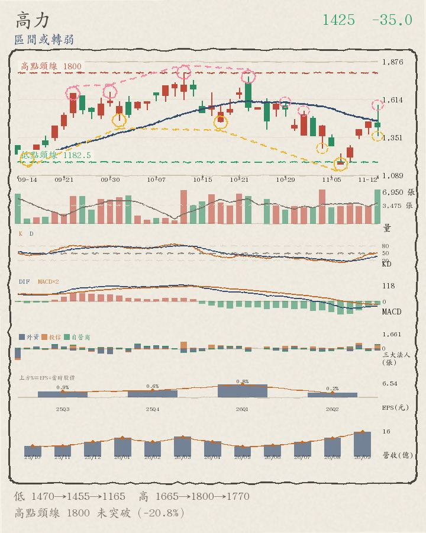
今天帶量收黑、跌破月線 1465.5，離高點頸線 1800 還差 20.8%，轉折還沒走出明顯方向。
- 月線位置：收盤 1425 在月線 1465.5 之下；5 日線 1350 也在月線之下（短均在下）；月線走平或向下、5 日線走平或向下
- 量能：成交量是 20 日均量的 1.64 倍，比 20 日均量大不少；收黑卻量增，量價背離
- 關鍵價位：高點頸線 1800 還沒突破，差 20.8%；最近轉折高點 1770（低於 19.5%）；最近轉折低點 1165（高於 22.3%）
- 轉折結構：低點 1470、1455、1165 與高點 1665、1800、1770 都沒有明顯遞增，屬於區間震盪或轉弱；還沒確認的轉折低點 11-04 1275、11-12 1360；還沒確認的轉折高點 11-02 1535、11-12 1575（圖上虛線小圈）
騰輝電子-KY 6672 上市
497 -28.0
剛突破前高 成交金額 98.34 億・全榜第 34 名（上市第 28 名）
好條件 3/4：在月線之下、月線下彎、外資買超
不好條件 0/5：無
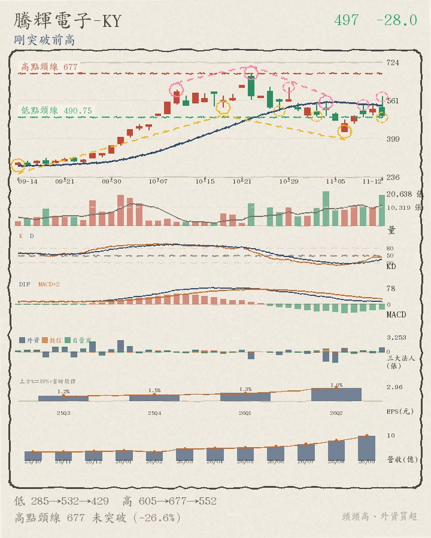
今天帶量收黑、跌破月線 539.375，離高點頸線 677 還差 26.6%，高點還在墊高（但底部沒同步墊高）。
- 月線位置：收盤 497 在月線 539.375 之下；5 日線 496.4 也在月線之下（短均在下）；月線走平或向下、5 日線走平或向下
- 量能：成交量是 20 日均量的 2.22 倍，比 20 日均量大不少；收黑卻量增，量價背離
- 關鍵價位：高點頸線 677 還沒突破，差 26.6%；最近轉折高點 552（低於 10.0%）；最近轉折低點 429（高於 15.9%）
- 轉折結構：高點 605、677、552 墊高 4.5%（頭頭高），但低點 285、532、429 沒有同步墊高；還沒確認的轉折低點 11-03 493.5、11-12 488；還沒確認的轉折高點 11-10 542、11-12 577（圖上虛線小圈）
區間或轉弱 成交金額 96.11 億・全榜第 36 名（上市第 29 名）
好條件 3/4：在月線之下、月線下彎、外資買超
不好條件 0/5：無
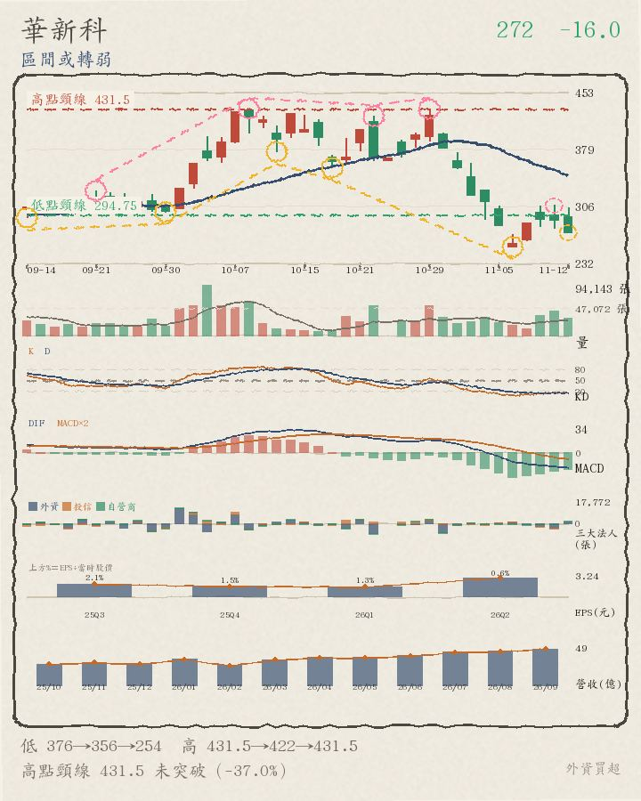
今天帶量收黑、跌破月線 345.525，離高點頸線 431.5 還差 37.0%，轉折還沒走出明顯方向。
- 月線位置：收盤 272 在月線 345.525 之下；5 日線 278.2 也在月線之下（短均在下）；月線走平或向下、5 日線走平或向下
- 量能：成交量是 20 日均量的 1.22 倍，比 20 日均量大不少；收黑卻量增，量價背離
- 關鍵價位：高點頸線 431.5 還沒突破，差 37.0%；最近轉折高點 431.5（低於 37.0%）；最近轉折低點 253.5（高於 7.3%）
- 轉折結構：低點 376.5、355.5、253.5 與高點 431.5、422、431.5 都沒有明顯遞增，屬於區間震盪或轉弱；還沒確認的轉折低點 11-12 272；還沒確認的轉折高點 11-11 307（圖上虛線小圈）
區間或轉弱 成交金額 93.84 億・全榜第 37 名（上市第 30 名）
好條件 2/4：在月線之下、月線下彎
不好條件 1/5：外資賣超
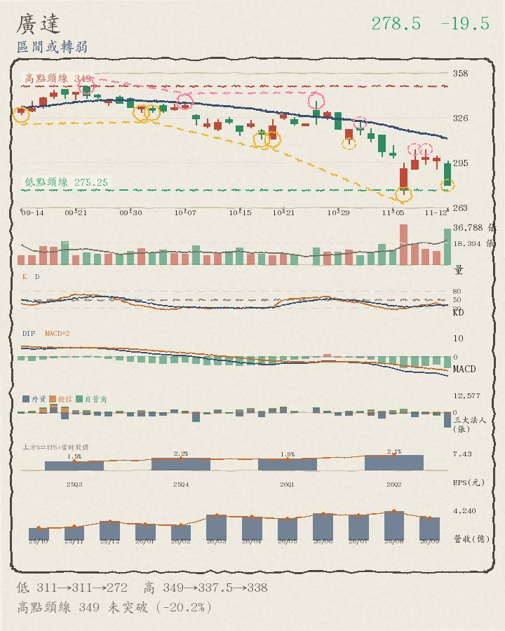
今天帶量收黑、跌破月線 311.675，離高點頸線 349 還差 20.2%，轉折還沒走出明顯方向。
- 月線位置：收盤 278.5 在月線 311.675 之下；5 日線 292.4 也在月線之下（短均在下）；月線走平或向下、5 日線走平或向下
- 量能：成交量是 20 日均量的 2.43 倍，比 20 日均量大不少；收黑卻量增，量價背離
- 關鍵價位：高點頸線 349 還沒突破，差 20.2%；最近轉折高點 338（低於 17.6%）；最近轉折低點 272（高於 2.4%）
- 轉折結構：低點 311、311、272 與高點 349、337.5、338 都沒有明顯遞增，屬於區間震盪或轉弱；還沒確認的轉折低點 10-30 308、11-12 278.5；還沒確認的轉折高點 11-09 304、11-10 304（圖上虛線小圈）
區間或轉弱 成交金額 91.62 億・全榜第 38 名（上市第 31 名）
好條件 2/4：在月線之下、月線下彎
不好條件 1/5：外資賣超

今天帶量收黑、跌破月線 663.975，離高點頸線 888 還差 43.1%，轉折還沒走出明顯方向。
- 月線位置：收盤 505 在月線 663.975 之下；5 日線 510.1 也在月線之下（短均在下）；月線走平或向下、5 日線走平或向下
- 量能：成交量是 20 日均量的 1.45 倍，比 20 日均量大不少；收黑卻量增，量價背離
- 關鍵價位：高點頸線 888 還沒突破，差 43.1%；最近轉折高點 859（低於 41.2%）；最近轉折低點 475.5（高於 6.2%）
- 轉折結構：低點 726、704、475.5 與高點 881、888、859 都沒有明顯遞增，屬於區間震盪或轉弱；還沒確認的轉折低點 11-04 526、11-12 505；還沒確認的轉折高點 10-29 778、11-12 571（圖上虛線小圈）
區間或轉弱 成交金額 78.52 億・全榜第 40 名（上市第 32 名）
好條件 3/4：在月線之下、月線下彎、外資買超
不好條件 0/5：無
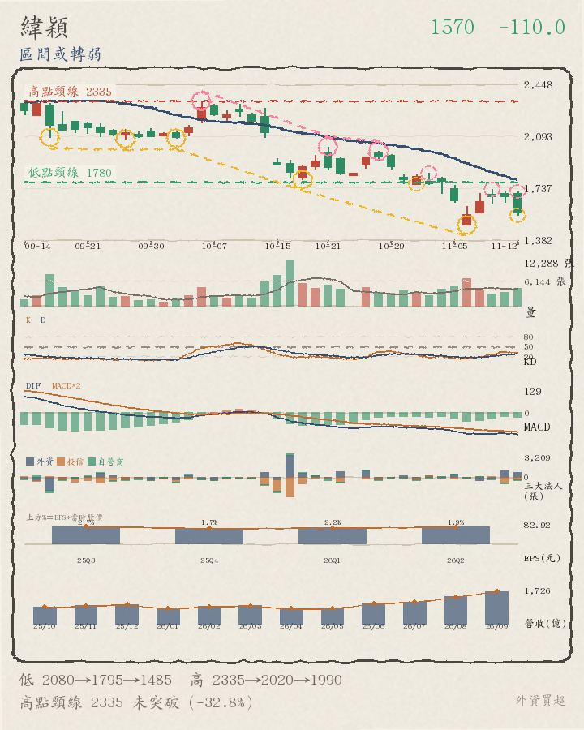
今天收黑、成交量也比平均少、跌破月線 1793.5，離高點頸線 2335 還差 32.8%，轉折還沒走出明顯方向。
- 月線位置：收盤 1570 在月線 1793.5 之下；5 日線 1626 也在月線之下（短均在下）；月線走平或向下、5 日線走平或向下
- 量能：成交量是 20 日均量的 0.93 倍，比 20 日均量少一些
- 關鍵價位：高點頸線 2335 還沒突破，差 32.8%；最近轉折高點 1990（低於 21.1%）；最近轉折低點 1485（高於 5.7%）
- 轉折結構：低點 2080、1795、1485 與高點 2335、2020、1990 都沒有明顯遞增，屬於區間震盪或轉弱；還沒確認的轉折低點 11-02 1765、11-12 1550；還沒確認的轉折高點 11-10 1730、11-12 1715（圖上虛線小圈）
區間或轉弱 成交金額 77.08 億・全榜第 41 名（上市第 33 名）
好條件 2/4：在月線之下、月線下彎
不好條件 1/5：外資賣超
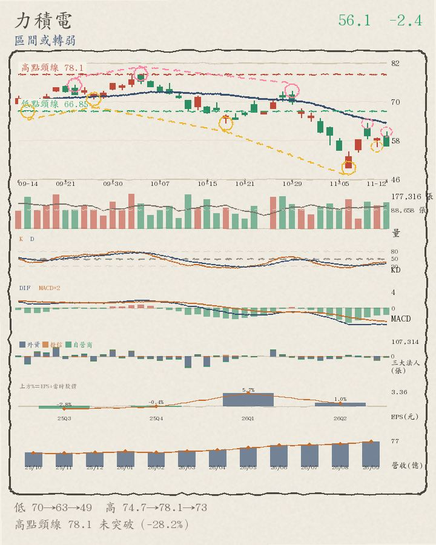
今天帶量收黑、跌破月線 63.16，離高點頸線 78.1 還差 28.2%，轉折還沒走出明顯方向。
- 月線位置：收盤 56.1 在月線 63.16 之下；5 日線 56.96 也在月線之下（短均在下）；月線走平或向下、5 日線走平或向下
- 量能：成交量是 20 日均量的 1.21 倍，比 20 日均量大不少；收黑卻量增，量價背離
- 關鍵價位：高點頸線 78.1 還沒突破，差 28.2%；最近轉折高點 73（低於 23.2%）；最近轉折低點 49.35（高於 13.7%）
- 轉折結構：低點 70.5、63、49.35 與高點 74.7、78.1、73 都沒有明顯遞增，屬於區間震盪或轉弱；還沒確認的轉折低點 11-11 55.9；還沒確認的轉折高點 11-10 63、11-12 60.4（圖上虛線小圈）
剛突破前高 成交金額 75.65 億・全榜第 42 名（上市第 34 名）
好條件 1/4：外資買超
不好條件 4/5：站上月線、月線向上、突破頸線、量價攻擊（收紅＋大量）

今天帶量收紅、站上月線 1228.25，已站上高點頸線 1300，高點還在墊高（但底部沒同步墊高）。
- 月線位置：收盤 1365 在月線 1228.25 之上；5 日線 1324 也在月線之上（短均在上）；月線向上、5 日線向上
- 量能：成交量是 20 日均量的 1.92 倍，比 20 日均量大不少；收紅又量增，量價配合
- 關鍵價位：高點頸線 1300 已站上；最近轉折高點 1255（高於 8.8%）；最近轉折低點 1075（高於 27.0%）
- 轉折結構：高點 1235、1300、1255 墊高 12.4%（頭頭高），但低點 1155、1145、1075 沒有同步墊高；還沒確認的轉折低點 10-30 1155、11-11 1235；還沒確認的轉折高點 11-09 1390、11-12 1410（圖上虛線小圈）
區間或轉弱 成交金額 70.55 億・全榜第 43 名（上市第 35 名）
好條件 3/4：在月線之下、月線下彎、外資買超
不好條件 0/5：無
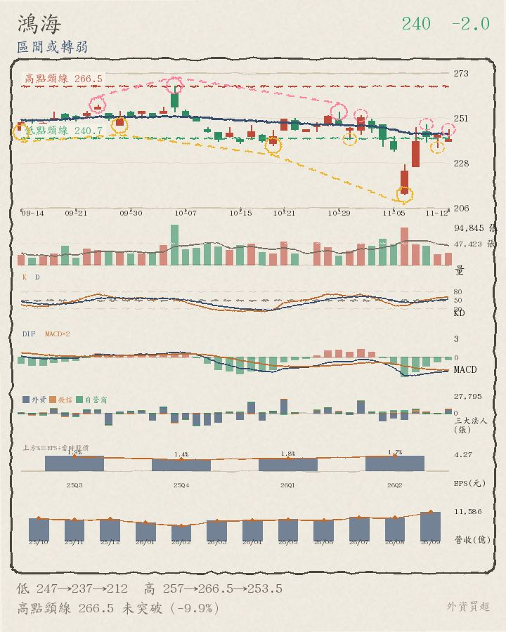
今天收黑、成交量也比平均少、跌破月線 242.775，離高點頸線 266.5 還差 9.9%，轉折還沒走出明顯方向。
- 月線位置：收盤 240 在月線 242.775 之下；5 日線 237.4 也在月線之下（短均在下）；月線走平或向下、5 日線走平或向下
- 量能：成交量是 20 日均量的 0.66 倍，比 20 日均量少很多
- 關鍵價位：高點頸線 266.5 還沒突破，差 9.9%；最近轉折高點 253.5（低於 5.3%）；最近轉折低點 212.5（高於 12.9%）
- 轉折結構：低點 247、237、212.5 與高點 257、266.5、253.5 都沒有明顯遞增，屬於區間震盪或轉弱；還沒確認的轉折低點 10-30 240、11-11 236；還沒確認的轉折高點 11-10 247.5、11-12 245（圖上虛線小圈）
區間或轉弱 成交金額 69.35 億・全榜第 44 名（上市第 36 名）
好條件 3/4：在月線之下、月線下彎、外資買超
不好條件 0/5：無
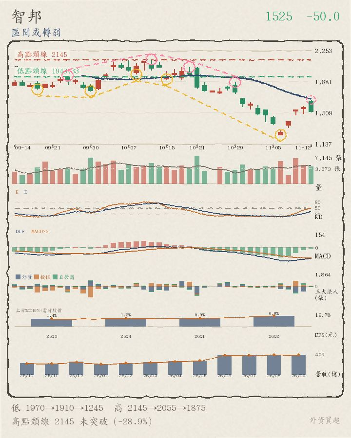
今天收黑、跌破月線 1675.75，離高點頸線 2145 還差 28.9%，轉折還沒走出明顯方向。
- 月線位置：收盤 1525 在月線 1675.75 之下；5 日線 1466 也在月線之下（短均在下）；月線走平或向下、5 日線走平或向下
- 量能：成交量是 20 日均量的 1.03 倍，跟 20 日均量差不多
- 關鍵價位：高點頸線 2145 還沒突破，差 28.9%；最近轉折高點 1875（低於 18.7%）；最近轉折低點 1245（高於 22.5%）
- 轉折結構：低點 1970、1910、1245 與高點 2145、2055、1875 都沒有明顯遞增，屬於區間震盪或轉弱；還沒確認的轉折高點 11-12 1665（圖上虛線小圈）
剛突破前高 成交金額 66.83 億・全榜第 45 名（上市第 37 名）
好條件 1/4：月線下彎
不好條件 3/5：站上月線、量價攻擊（收紅＋大量）、外資賣超

今天帶量收紅、站上月線 522.275，離高點頸線 604 還差 11.6%，高點還在墊高（但底部沒同步墊高）。
- 月線位置：收盤 534 在月線 522.275 之上；5 日線 476.9 也在月線之下（短均在下）；月線走平或向下、5 日線走平或向下
- 量能：成交量是 20 日均量的 3.55 倍，比 20 日均量大不少；收紅又量增，量價配合
- 關鍵價位：高點頸線 604 還沒突破，差 11.6%；最近轉折高點 563（低於 5.2%）；最近轉折低點 395（高於 35.2%）
- 轉折結構：高點 604、597、563 墊高 1.6%（頭頭高），但低點 554、554、395 沒有同步墊高；還沒確認的轉折低點 10-30 502；還沒確認的轉折高點 11-02 539、11-12 572（圖上虛線小圈）
高點墊高、底部不穩 成交金額 65.52 億・全榜第 46 名（上市第 38 名）
好條件 2/4：在月線之下、月線下彎
不好條件 1/5：外資賣超
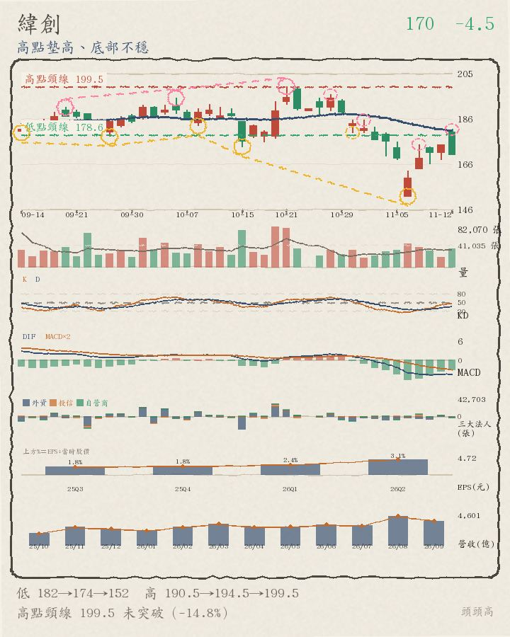
今天收黑、跌破月線 180.3，離高點頸線 199.5 還差 14.8%，高點還在墊高（但底部沒同步墊高）。
- 月線位置：收盤 170 在月線 180.3 之下；5 日線 168.8 也在月線之下（短均在下）；月線走平或向下、5 日線走平或向下
- 量能：成交量是 20 日均量的 1.00 倍，跟 20 日均量差不多
- 關鍵價位：高點頸線 199.5 還沒突破，差 14.8%；最近轉折高點 199.5（低於 14.8%）；最近轉折低點 152（高於 11.8%）
- 轉折結構：高點 190.5、194.5、199.5 墊高 4.7%（頭頭高），但低點 182.5、173.5、152 沒有同步墊高；還沒確認的轉折低點 10-30 179.5；還沒確認的轉折高點 11-09 174.5、11-12 181（圖上虛線小圈）
區間或轉弱 成交金額 65.23 億・全榜第 47 名（上市第 39 名）
好條件 2/4：在月線之下、月線下彎
不好條件 1/5：外資賣超
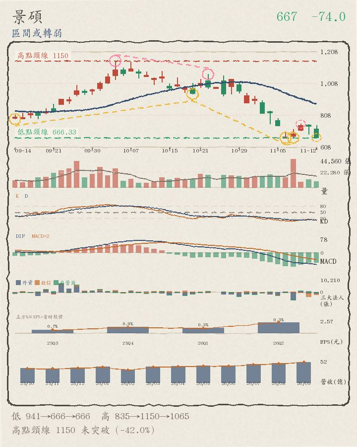
今天收黑、成交量也比平均少、跌破月線 878，離高點頸線 1150 還差 42.0%，轉折還沒走出明顯方向。
- 月線位置：收盤 667 在月線 878 之下；5 日線 702.8 也在月線之下（短均在下）；月線走平或向下、5 日線走平或向下
- 量能：成交量是 20 日均量的 0.53 倍，比 20 日均量少很多
- 關鍵價位：高點頸線 1150 還沒突破，差 42.0%；最近轉折高點 1065（低於 37.4%）；最近轉折低點 666（高於 0.2%）
- 轉折結構：低點 941、666、666 與高點 835、1150、1065 都沒有明顯遞增，屬於區間震盪或轉弱；還沒確認的轉折低點 11-12 667；還沒確認的轉折高點 11-10 752（圖上虛線小圈）
區間或轉弱 成交金額 59.05 億・全榜第 50 名（上市第 40 名）
好條件 2/4：在月線之下、月線下彎
不好條件 1/5：外資賣超
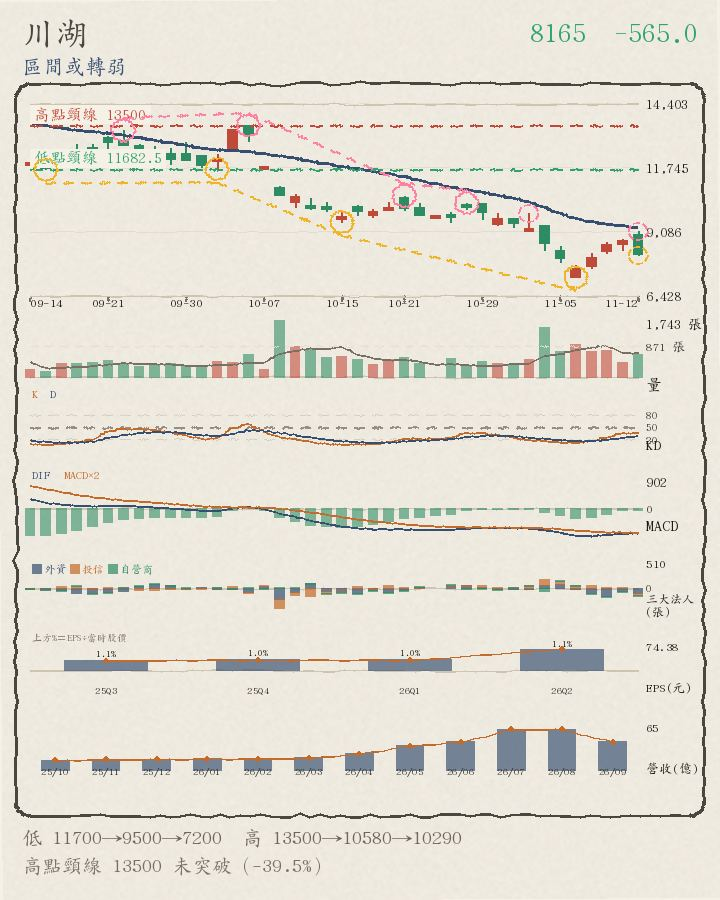
今天帶量收黑、跌破月線 9253.25，離高點頸線 13500 還差 39.5%，轉折還沒走出明顯方向。
- 月線位置：收盤 8165 在月線 9253.25 之下；5 日線 8207 也在月線之下（短均在下）；月線走平或向下、5 日線走平或向下
- 量能：成交量是 20 日均量的 1.11 倍，比 20 日均量大一些；收黑卻量增，量價背離
- 關鍵價位：高點頸線 13500 還沒突破，差 39.5%；最近轉折高點 10290（低於 20.7%）；最近轉折低點 7200（高於 13.4%）
- 轉折結構：低點 11700、9500、7200 與高點 13500、10580、10290 都沒有明顯遞增，屬於區間震盪或轉弱；還沒確認的轉折低點 11-12 8115；還沒確認的轉折高點 11-03 9850、11-12 9100（圖上虛線小圈）
區間或轉弱 成交金額 55.14 億・全榜第 52 名（上市第 41 名）
好條件 2/4：在月線之下、月線下彎
不好條件 1/5：外資賣超
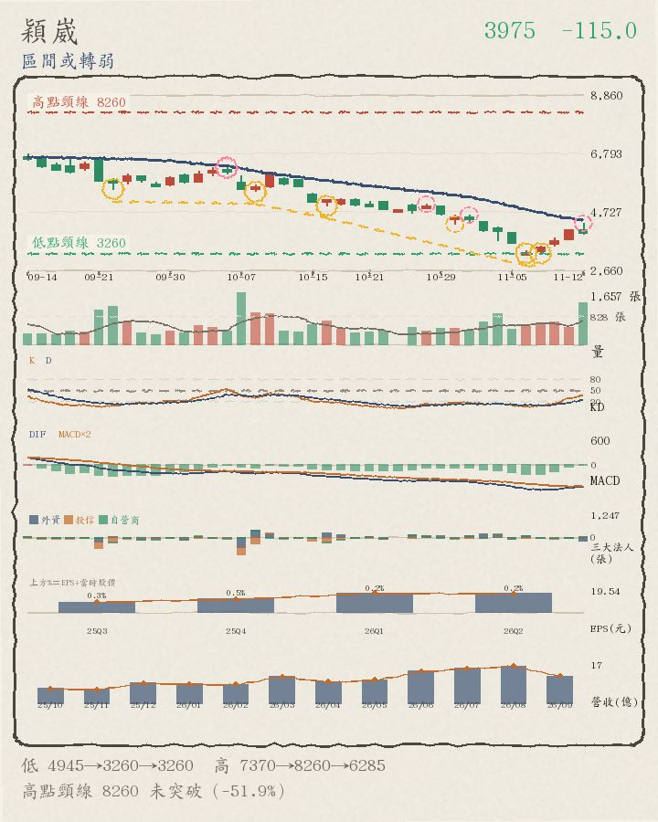
今天帶量收黑、跌破月線 4430，離高點頸線 8260 還差 51.9%，轉折還沒走出明顯方向。
- 月線位置：收盤 3975 在月線 4430 之下；5 日線 3715 也在月線之下（短均在下）；月線走平或向下、5 日線走平或向下
- 量能：成交量是 20 日均量的 2.43 倍，比 20 日均量大不少；收黑卻量增，量價背離
- 關鍵價位：高點頸線 8260 還沒突破，差 51.9%；最近轉折高點 6285（低於 36.8%）；最近轉折低點 3260（高於 21.9%）
- 轉折結構：低點 4945、3260、3260 與高點 7370、8260、6285 都沒有明顯遞增，屬於區間震盪或轉弱；還沒確認的轉折低點 10-30 4290；還沒確認的轉折高點 11-02 4625、11-12 4325（圖上虛線小圈）
GIS-KY 6456 上市
101.5 +8.9
區間或轉弱 成交金額 51.32 億・全榜第 53 名（上市第 42 名）
好條件 2/4：月線下彎、外資買超
不好條件 2/5：站上月線、量價攻擊（收紅＋大量）
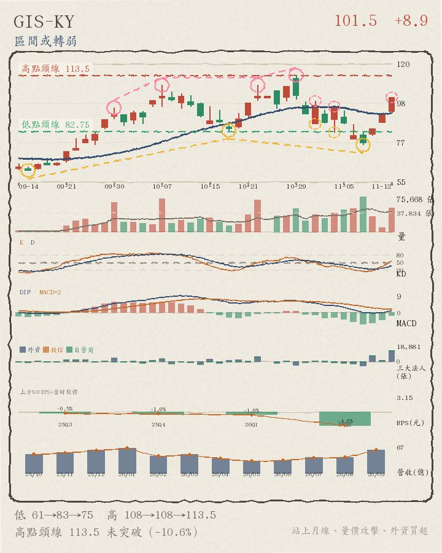
今天帶量收紅、站上月線 92.85，離高點頸線 113.5 還差 10.6%，轉折還沒走出明顯方向。
- 月線位置：收盤 101.5 在月線 92.85 之上；5 日線 87.1 也在月線之下（短均在下）；月線走平或向下、5 日線走平或向下
- 量能：成交量是 20 日均量的 1.44 倍，比 20 日均量大不少；收紅又量增，量價配合
- 關鍵價位：高點頸線 113.5 還沒突破，差 10.6%；最近轉折高點 113.5（低於 10.6%）；最近轉折低點 75.4（高於 34.6%）
- 轉折結構：低點 61.4、83.3、75.4 與高點 108、108、113.5 都沒有明顯遞增，屬於區間震盪或轉弱；還沒確認的轉折低點 11-02 87、11-04 82.2；還沒確認的轉折高點 11-04 96.4、11-12 101.5（圖上虛線小圈）
區間或轉弱 成交金額 51.12 億・全榜第 55 名（上市第 43 名）
好條件 3/4：在月線之下、月線下彎、外資買超
不好條件 1/5：量價攻擊（收紅＋大量）
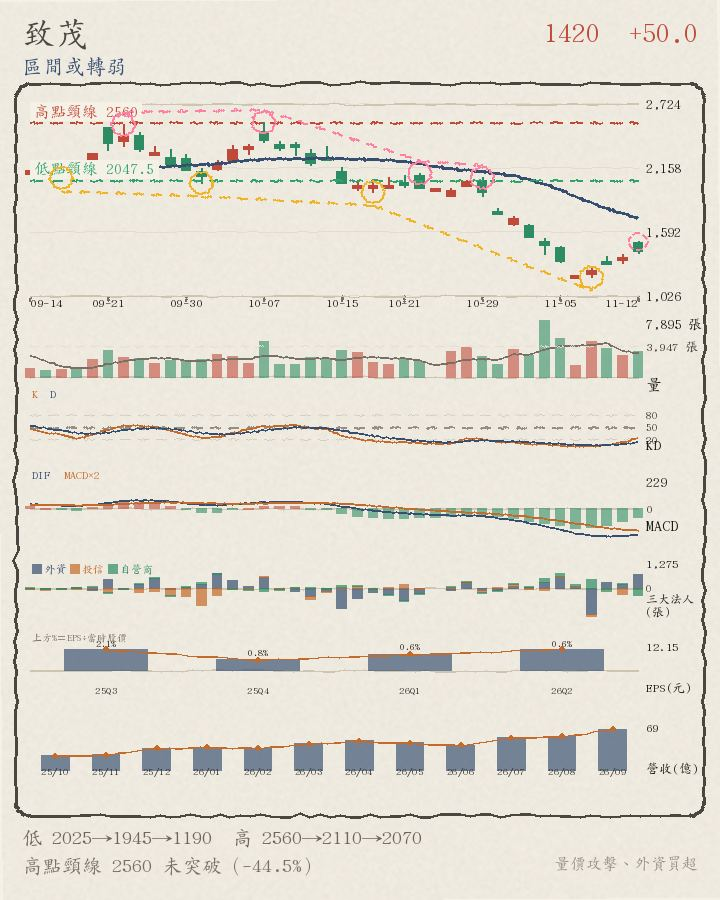
今天收紅、跌破月線 1715.5，離高點頸線 2560 還差 44.5%，轉折還沒走出明顯方向。
- 月線位置：收盤 1420 在月線 1715.5 之下；5 日線 1311 也在月線之下（短均在下）；月線走平或向下、5 日線走平或向下
- 量能：成交量是 20 日均量的 1.04 倍，跟 20 日均量差不多
- 關鍵價位：高點頸線 2560 還沒突破，差 44.5%；最近轉折高點 2070（低於 31.4%）；最近轉折低點 1190（高於 19.3%）
- 轉折結構：低點 2025、1945、1190 與高點 2560、2110、2070 都沒有明顯遞增，屬於區間震盪或轉弱；還沒確認的轉折高點 11-12 1505（圖上虛線小圈）
區間或轉弱 成交金額 50.12 億・全榜第 56 名（上市第 44 名）
好條件 2/4：在月線之下、月線下彎
不好條件 1/5：外資賣超
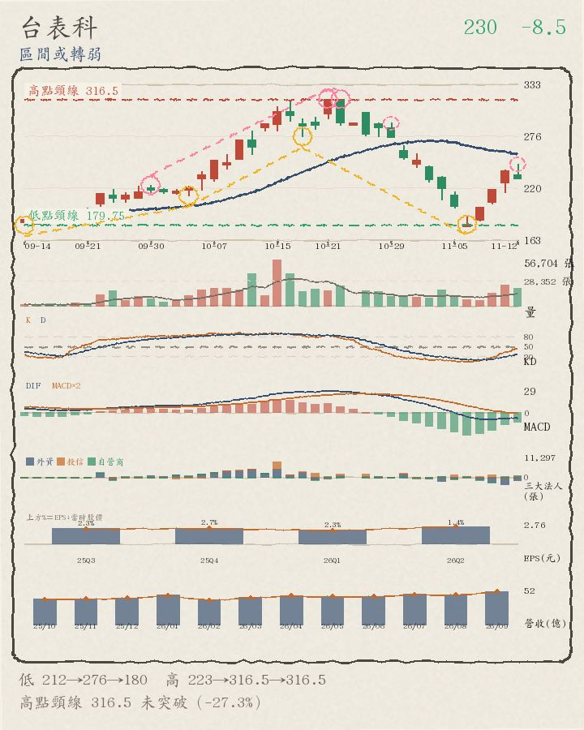
今天帶量收黑、跌破月線 256.575，離高點頸線 316.5 還差 27.3%，轉折還沒走出明顯方向。
- 月線位置：收盤 230 在月線 256.575 之下；5 日線 213.1 也在月線之下（短均在下）；月線走平或向下、5 日線走平或向下
- 量能：成交量是 20 日均量的 1.12 倍，比 20 日均量大一些；收黑卻量增，量價背離
- 關鍵價位：高點頸線 316.5 還沒突破，差 27.3%；最近轉折高點 316.5（低於 27.3%）；最近轉折低點 180（高於 27.8%）
- 轉折結構：低點 211.5、276、180 與高點 223、316.5、316.5 都沒有明顯遞增，屬於區間震盪或轉弱；還沒確認的轉折高點 10-29 290.5、11-12 246（圖上虛線小圈）
區間或轉弱 成交金額 49.63 億・全榜第 57 名（上市第 45 名）
好條件 3/4：在月線之下、月線下彎、外資買超
不好條件 0/5：無
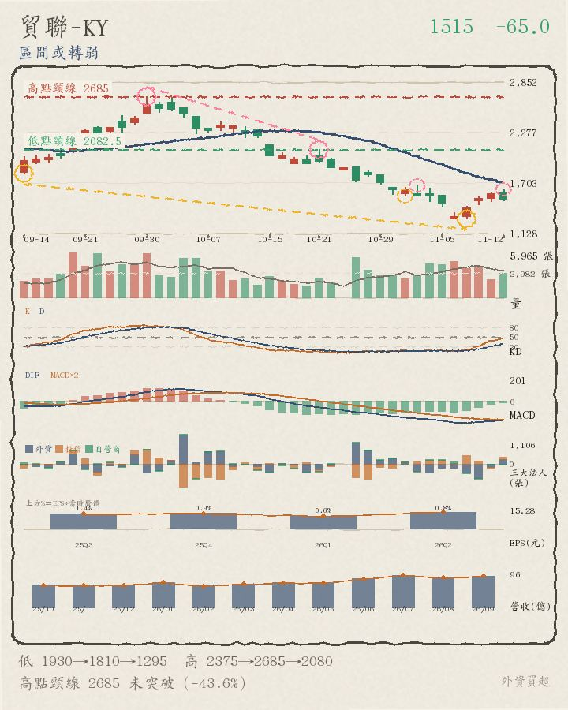
今天收黑、跌破月線 1705.75，離高點頸線 2685 還差 43.6%，轉折還沒走出明顯方向。
- 月線位置：收盤 1515 在月線 1705.75 之下；5 日線 1474 也在月線之下（短均在下）；月線走平或向下、5 日線走平或向下
- 量能：成交量是 20 日均量的 1.04 倍，跟 20 日均量差不多
- 關鍵價位：高點頸線 2685 還沒突破，差 43.6%；最近轉折高點 2080（低於 27.2%）；最近轉折低點 1295（高於 17.0%）
- 轉折結構：低點 1930、1810、1295 與高點 2375、2685、2080 都沒有明顯遞增，屬於區間震盪或轉弱；還沒確認的轉折低點 11-02 1555；還沒確認的轉折高點 11-03 1675、11-12 1630（圖上虛線小圈）
區間或轉弱 成交金額 45.56 億・全榜第 58 名（上市第 46 名）
好條件 2/4：在月線之下、月線下彎
不好條件 1/5：外資賣超
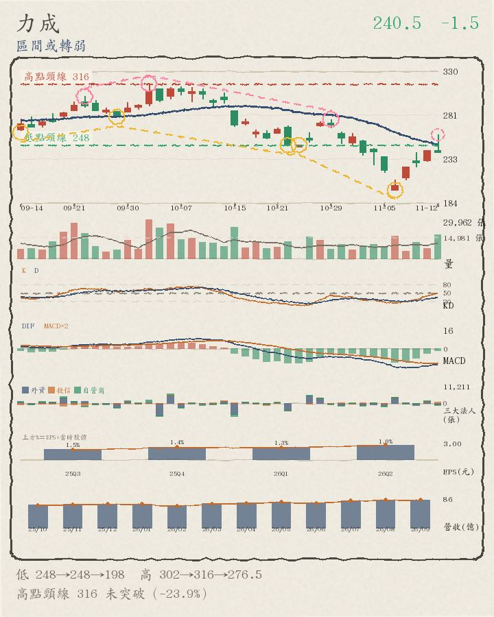
今天帶量收黑、跌破月線 248.8，離高點頸線 316 還差 23.9%，轉折還沒走出明顯方向。
- 月線位置：收盤 240.5 在月線 248.8 之下；5 日線 227.9 也在月線之下（短均在下）；月線走平或向下、5 日線走平或向下
- 量能：成交量是 20 日均量的 1.64 倍，比 20 日均量大不少；收黑卻量增，量價背離
- 關鍵價位：高點頸線 316 還沒突破，差 23.9%；最近轉折高點 276.5（低於 13.0%）；最近轉折低點 198（高於 21.5%）
- 轉折結構：低點 248、248、198 與高點 302、316、276.5 都沒有明顯遞增，屬於區間震盪或轉弱；還沒確認的轉折高點 11-12 259.5（圖上虛線小圈）
區間或轉弱 成交金額 43.21 億・全榜第 59 名（上市第 47 名）
好條件 2/4：在月線之下、月線下彎
不好條件 1/5：外資賣超
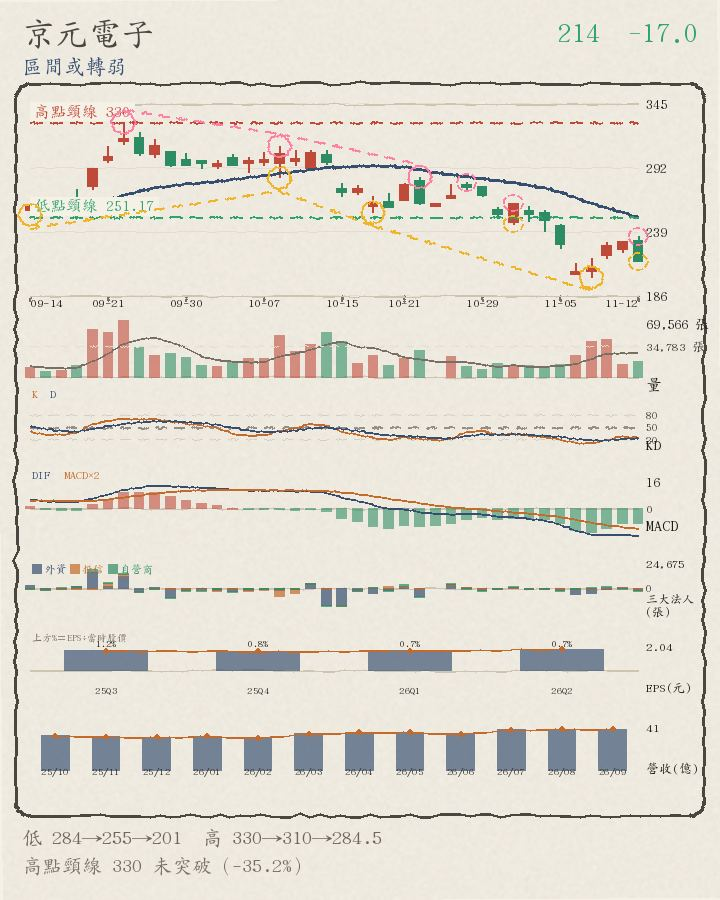
今天收黑、成交量也比平均少、跌破月線 251.2，離高點頸線 330 還差 35.2%，轉折還沒走出明顯方向。
- 月線位置：收盤 214 在月線 251.2 之下；5 日線 217.6 也在月線之下（短均在下）；月線走平或向下、5 日線走平或向下
- 量能：成交量是 20 日均量的 0.79 倍，比 20 日均量少很多
- 關鍵價位：高點頸線 330 還沒突破，差 35.2%；最近轉折高點 284.5（低於 24.8%）；最近轉折低點 201（高於 6.5%）
- 轉折結構：低點 284、255、201 與高點 330、310、284.5 都沒有明顯遞增，屬於區間震盪或轉弱；還沒確認的轉折低點 11-02 245.5、11-12 214；還沒確認的轉折高點 11-02 263、11-12 235（圖上虛線小圈）
區間或轉弱 成交金額 40.68 億・全榜第 62 名（上市第 48 名）
好條件 3/4：在月線之下、月線下彎、外資買超
不好條件 0/5：無
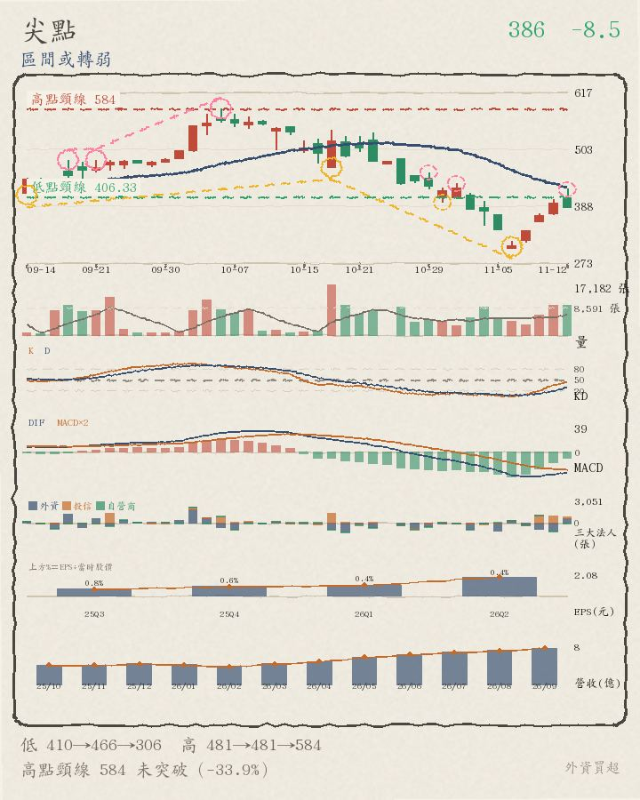
今天帶量收黑、跌破月線 425.75，離高點頸線 584 還差 33.9%，轉折還沒走出明顯方向。
- 月線位置：收盤 386 在月線 425.75 之下；5 日線 359.4 也在月線之下（短均在下）；月線走平或向下、5 日線走平或向下
- 量能：成交量是 20 日均量的 1.59 倍，比 20 日均量大不少；收黑卻量增，量價背離
- 關鍵價位：高點頸線 584 還沒突破，差 33.9%；最近轉折高點 584（低於 33.9%）；最近轉折低點 306.5（高於 25.9%）
- 轉折結構：低點 410.5、466、306.5 與高點 481、481、584 都沒有明顯遞增，屬於區間震盪或轉弱；還沒確認的轉折低點 10-30 395.5；還沒確認的轉折高點 11-02 434、11-12 422（圖上虛線小圈）
區間或轉弱 成交金額 38.4 億・全榜第 63 名（上市第 49 名）
好條件 3/4：在月線之下、月線下彎、外資買超
不好條件 0/5：無
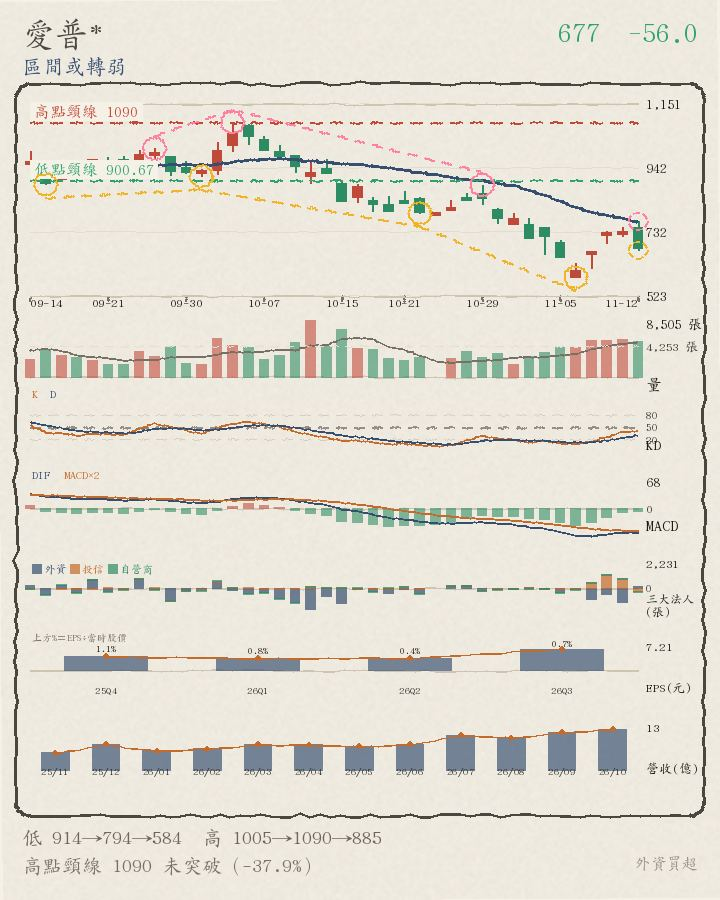
今天帶量收黑、跌破月線 764.95，離高點頸線 1090 還差 37.9%，轉折還沒走出明顯方向。
- 月線位置：收盤 677 在月線 764.95 之下；5 日線 683.2 也在月線之下（短均在下）；月線走平或向下、5 日線走平或向下
- 量能：成交量是 20 日均量的 1.35 倍，比 20 日均量大不少；收黑卻量增，量價背離
- 關鍵價位：高點頸線 1090 還沒突破，差 37.9%；最近轉折高點 885（低於 23.5%）；最近轉折低點 584（高於 15.9%）
- 轉折結構：低點 914、794、584 與高點 1005、1090、885 都沒有明顯遞增，屬於區間震盪或轉弱；還沒確認的轉折低點 11-12 673；還沒確認的轉折高點 11-12 766（圖上虛線小圈）
區間或轉弱 成交金額 36.2 億・全榜第 65 名（上市第 50 名）
好條件 2/4：在月線之下、月線下彎
不好條件 1/5：外資賣超
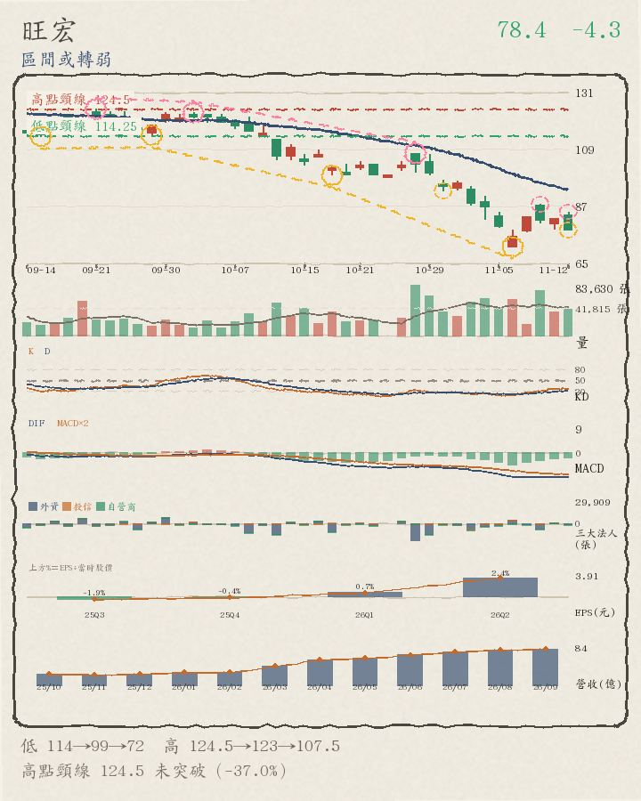
今天收黑、跌破月線 93.555，離高點頸線 124.5 還差 37.0%，轉折還沒走出明顯方向。
- 月線位置：收盤 78.4 在月線 93.555 之下；5 日線 80.46 也在月線之下（短均在下）；月線走平或向下、5 日線走平或向下
- 量能：成交量是 20 日均量的 1.03 倍，跟 20 日均量差不多
- 關鍵價位：高點頸線 124.5 還沒突破，差 37.0%；最近轉折高點 107.5（低於 27.1%）；最近轉折低點 71.8（高於 9.2%）
- 轉折結構：低點 114.5、99.2、71.8 與高點 124.5、123、107.5 都沒有明顯遞增，屬於區間震盪或轉弱；還沒確認的轉折低點 10-30 93.2、11-12 78.2；還沒確認的轉折高點 11-10 88.2、11-12 85.2（圖上虛線小圈）
剛突破前高 成交金額 351.98 億・全榜第 5 名（上櫃第 1 名）
好條件 1/4：月線下彎
不好條件 2/5：站上月線、外資賣超
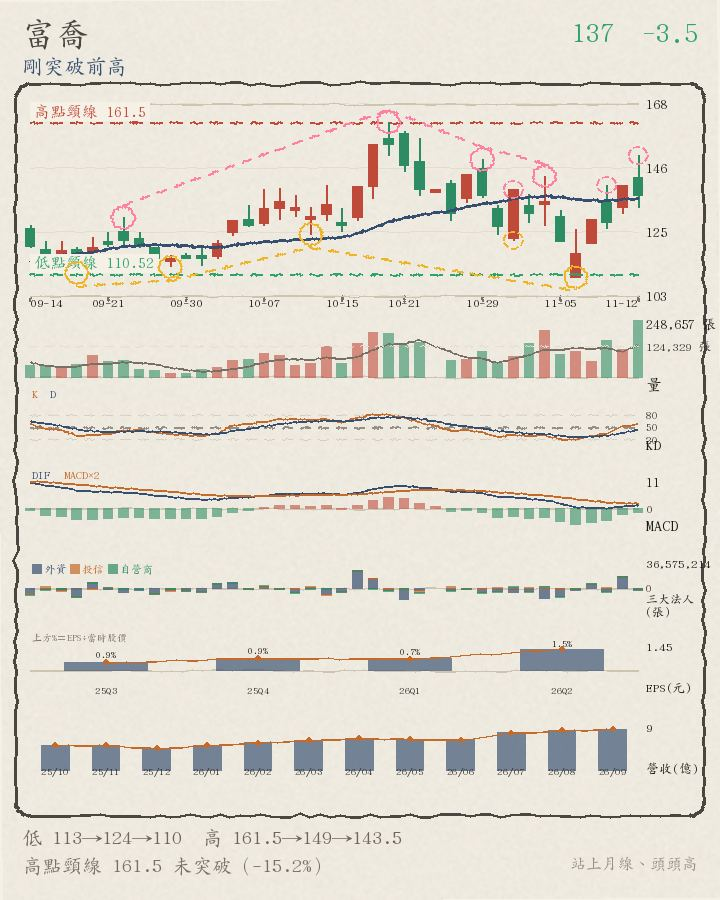
今天帶量收黑、站上月線 135.875，離高點頸線 161.5 還差 15.2%，高點還在墊高（但底部沒同步墊高）。
- 月線位置：收盤 137 在月線 135.875 之上；5 日線 130.4 也在月線之下（短均在下）；月線走平或向下、5 日線走平或向下
- 量能：成交量是 20 日均量的 2.03 倍，比 20 日均量大不少；收黑卻量增，量價背離
- 關鍵價位：高點頸線 161.5 還沒突破，差 15.2%；最近轉折高點 143.5（低於 4.5%）；最近轉折低點 109.5（高於 25.1%）
- 轉折結構：高點 161.5、149、143.5 墊高 4.9%（頭頭高），但低點 113、124、109.5 沒有同步墊高；還沒確認的轉折低點 11-02 122；還沒確認的轉折高點 11-10 140.5、11-12 150.5（圖上虛線小圈）
區間或轉弱 成交金額 232.51 億・全榜第 10 名（上櫃第 2 名）
好條件 2/4：月線下彎、外資買超
不好條件 1/5：站上月線
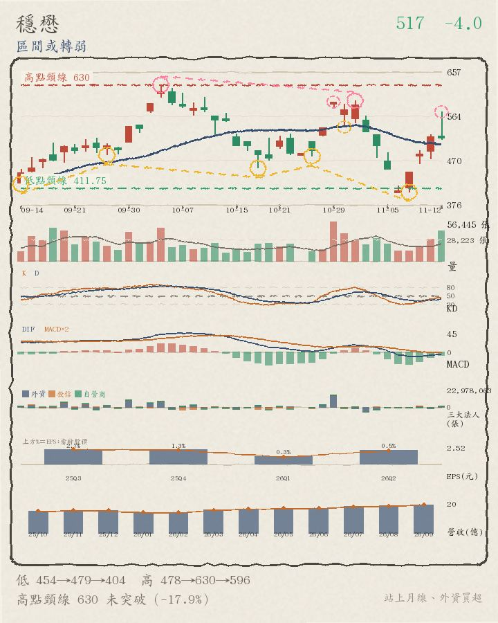
今天帶量收黑、站上月線 504.6，離高點頸線 630 還差 17.9%，轉折還沒走出明顯方向。
- 月線位置：收盤 517 在月線 504.6 之上；5 日線 475 也在月線之下（短均在下）；月線走平或向下、5 日線走平或向下
- 量能：成交量是 20 日均量的 1.83 倍，比 20 日均量大不少；收黑卻量增，量價背離
- 關鍵價位：高點頸線 630 還沒突破，差 17.9%；最近轉折高點 596（低於 13.3%）；最近轉折低點 403.5（高於 28.1%）
- 轉折結構：低點 454、479、403.5 與高點 478、630、596 都沒有明顯遞增，屬於區間震盪或轉弱；還沒確認的轉折低點 10-30 541；還沒確認的轉折高點 10-29 594、11-12 573（圖上虛線小圈）
區間或轉弱 成交金額 153.33 億・全榜第 16 名（上櫃第 3 名）
好條件 3/4：在月線之下、月線下彎、外資買超
不好條件 0/5：無

今天帶量收黑、跌破月線 1267.8，離高點頸線 1835 還差 47.9%，轉折還沒走出明顯方向。
- 月線位置：收盤 956 在月線 1267.8 之下；5 日線 973.2 也在月線之下（短均在下）；月線走平或向下、5 日線走平或向下
- 量能：成交量是 20 日均量的 1.21 倍，比 20 日均量大不少；收黑卻量增，量價背離
- 關鍵價位：高點頸線 1835 還沒突破，差 47.9%；最近轉折高點 1450（低於 34.1%）；最近轉折低點 897（高於 6.6%）
- 轉折結構：低點 1295、1275、897 與高點 1460、1835、1450 都沒有明顯遞增，屬於區間震盪或轉弱；還沒確認的轉折低點 11-12 954；還沒確認的轉折高點 11-12 1080（圖上虛線小圈）
區間或轉弱 成交金額 147.88 億・全榜第 17 名（上櫃第 4 名）
好條件 2/4：月線下彎、外資買超
不好條件 2/5：站上月線、量價攻擊（收紅＋大量）

今天帶量收紅、站上月線 449.075，離高點頸線 530 還差 10.9%，轉折還沒走出明顯方向。
- 月線位置：收盤 472 在月線 449.075 之上；5 日線 428.4 也在月線之下（短均在下）；月線走平或向下、5 日線走平或向下
- 量能：成交量是 20 日均量的 2.42 倍，比 20 日均量大不少；收紅又量增，量價配合
- 關鍵價位：高點頸線 530 還沒突破，差 10.9%；最近轉折高點 513（低於 8.0%）；最近轉折低點 362.5（高於 30.2%）
- 轉折結構：低點 436.5、399、362.5 與高點 487、530、513 都沒有明顯遞增，屬於區間震盪或轉弱；還沒確認的轉折低點 10-30 455、11-04 387；還沒確認的轉折高點 11-12 513（圖上虛線小圈）
區間或轉弱 成交金額 115.36 億・全榜第 27 名（上櫃第 5 名）
好條件 1/4：月線下彎
不好條件 3/5：站上月線、量價攻擊（收紅＋大量）、外資賣超
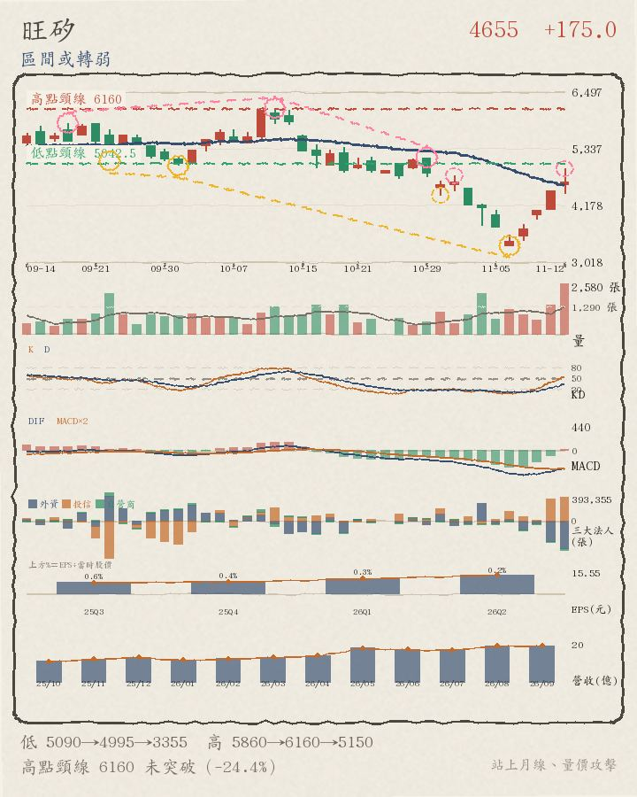
今天帶量收紅、站上月線 4592.25，離高點頸線 6160 還差 24.4%，轉折還沒走出明顯方向。
- 月線位置：收盤 4655 在月線 4592.25 之上；5 日線 4072 也在月線之下（短均在下）；月線走平或向下、5 日線走平或向下
- 量能：成交量是 20 日均量的 2.61 倍，比 20 日均量大不少；收紅又量增，量價配合
- 關鍵價位：高點頸線 6160 還沒突破，差 24.4%；最近轉折高點 5150（低於 9.6%）；最近轉折低點 3355（高於 38.7%）
- 轉折結構：低點 5090、4995、3355 與高點 5860、6160、5150 都沒有明顯遞增，屬於區間震盪或轉弱；還沒確認的轉折低點 10-30 4390；還沒確認的轉折高點 11-02 4790、11-12 4925（圖上虛線小圈）
區間或轉弱 成交金額 110.92 億・全榜第 31 名（上櫃第 6 名）
好條件 3/4：在月線之下、月線下彎、外資買超
不好條件 0/5：無

今天帶量收黑、跌破月線 411.15，離高點頸線 578 還差 36.2%，轉折還沒走出明顯方向。
- 月線位置：收盤 368.5 在月線 411.15 之下；5 日線 351.8 也在月線之下（短均在下）；月線走平或向下、5 日線走平或向下
- 量能：成交量是 20 日均量的 2.61 倍，比 20 日均量大不少；收黑卻量增，量價背離
- 關鍵價位：高點頸線 578 還沒突破，差 36.2%；最近轉折高點 510（低於 27.7%）；最近轉折低點 301（高於 22.4%）
- 轉折結構：低點 477、399.5、301 與高點 535、578、510 都沒有明顯遞增，屬於區間震盪或轉弱；還沒確認的轉折低點 10-30 399.5；還沒確認的轉折高點 11-03 428、11-12 413（圖上虛線小圈）
區間或轉弱 成交金額 96.62 億・全榜第 35 名（上櫃第 7 名）
好條件 3/4：在月線之下、月線下彎、外資買超
不好條件 0/5：無

今天帶量收黑、跌破月線 744.4，離高點頸線 1260 還差 50.6%，轉折還沒走出明顯方向。
- 月線位置：收盤 622 在月線 744.4 之下；5 日線 588.8 也在月線之下（短均在下）；月線走平或向下、5 日線走平或向下
- 量能：成交量是 20 日均量的 1.26 倍，比 20 日均量大不少；收黑卻量增，量價背離
- 關鍵價位：高點頸線 1260 還沒突破，差 50.6%；最近轉折高點 1260（低於 50.6%）；最近轉折低點 508（高於 22.4%）
- 轉折結構：低點 875、872、508 與高點 1015、1010、1260 都沒有明顯遞增，屬於區間震盪或轉弱；還沒確認的轉折高點 10-28 860、11-12 663（圖上虛線小圈）
區間或轉弱 成交金額 79.46 億・全榜第 39 名（上櫃第 8 名）
好條件 2/4：在月線之下、月線下彎
不好條件 1/5：外資賣超
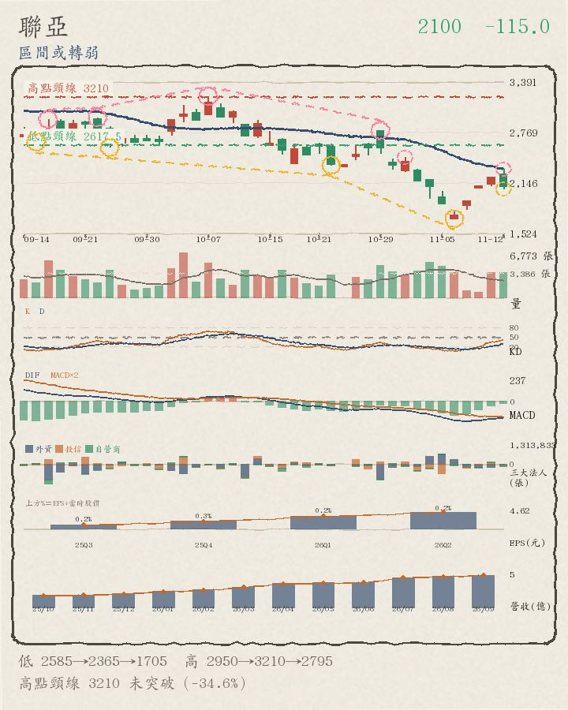
今天帶量收黑、跌破月線 2316.5，離高點頸線 3210 還差 34.6%，轉折還沒走出明顯方向。
- 月線位置：收盤 2100 在月線 2316.5 之下；5 日線 2021 也在月線之下（短均在下）；月線走平或向下、5 日線走平或向下
- 量能：成交量是 20 日均量的 1.16 倍，比 20 日均量大不少；收黑卻量增，量價背離
- 關鍵價位：高點頸線 3210 還沒突破，差 34.6%；最近轉折高點 2795（低於 24.9%）；最近轉折低點 1705（高於 23.2%）
- 轉折結構：低點 2585、2365、1705 與高點 2950、3210、2795 都沒有明顯遞增，屬於區間震盪或轉弱；還沒確認的轉折低點 11-12 2075；還沒確認的轉折高點 11-02 2465、11-12 2320（圖上虛線小圈）
區間或轉弱 成交金額 65.11 億・全榜第 48 名（上櫃第 9 名）
好條件 2/4：在月線之下、月線下彎
不好條件 1/5：外資賣超
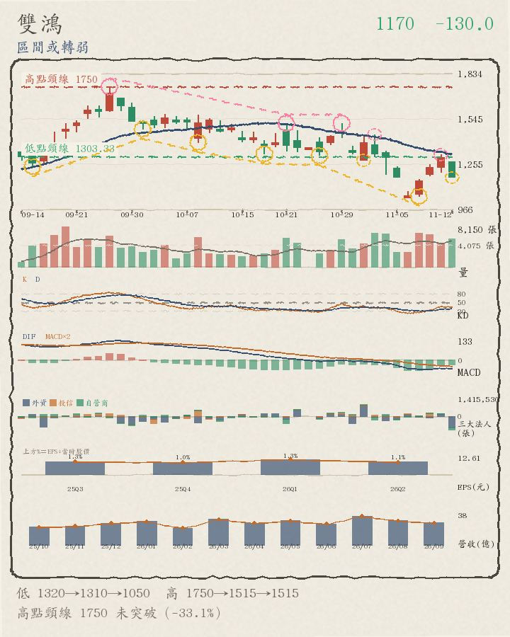
今天帶量收黑、跌破月線 1318.25，離高點頸線 1750 還差 33.1%，轉折還沒走出明顯方向。
- 月線位置：收盤 1170 在月線 1318.25 之下；5 日線 1182 也在月線之下（短均在下）；月線走平或向下、5 日線走平或向下
- 量能：成交量是 20 日均量的 1.32 倍，比 20 日均量大不少；收黑卻量增，量價背離
- 關鍵價位：高點頸線 1750 還沒突破，差 33.1%；最近轉折高點 1515（低於 22.8%）；最近轉折低點 1050（高於 11.4%）
- 轉折結構：低點 1320、1310、1050 與高點 1750、1515、1515 都沒有明顯遞增，屬於區間震盪或轉弱；還沒確認的轉折低點 11-02 1280、11-12 1170；還沒確認的轉折高點 11-03 1445、11-11 1315（圖上虛線小圈）
區間或轉弱 成交金額 61.54 億・全榜第 49 名（上櫃第 10 名）
好條件 3/4：在月線之下、月線下彎、外資買超
不好條件 0/5：無
今天帶量收黑、跌破月線 1802.75，離高點頸線 2350 還差 30.4%，轉折還沒走出明顯方向。
- 月線位置：收盤 1635 在月線 1802.75 之下；5 日線 1638 也在月線之下（短均在下）；月線走平或向下、5 日線走平或向下
- 量能：成交量是 20 日均量的 1.19 倍，比 20 日均量大不少；收黑卻量增，量價背離
- 關鍵價位：高點頸線 2350 還沒突破，差 30.4%；最近轉折高點 2090（低於 21.8%）；最近轉折低點 1405（高於 16.4%）
- 轉折結構：低點 1785、1865、1405 與高點 2160、2350、2090 都沒有明顯遞增，屬於區間震盪或轉弱；還沒確認的轉折低點 11-10 1630、11-12 1635；還沒確認的轉折高點 11-10 1760、11-12 1765（圖上虛線小圈）
剛突破前高 成交金額 58.72 億・全榜第 51 名（上櫃第 11 名）
好條件 2/4：月線下彎、外資買超
不好條件 2/5：站上月線、量價攻擊（收紅＋大量）
今天帶量收紅、站上月線 1308，離高點頸線 1760 還差 17.3%，高點還在墊高（但底部沒同步墊高）。
- 月線位置：收盤 1455 在月線 1308 之上；5 日線 1294 也在月線之下（短均在下）；月線走平或向下、5 日線向上
- 量能：成交量是 20 日均量的 3.68 倍，比 20 日均量大不少；收紅又量增，量價配合
- 關鍵價位：高點頸線 1760 還沒突破，差 17.3%；最近轉折高點 1470（低於 1.0%）；最近轉折低點 1065（高於 36.6%）
- 轉折結構：高點 1630、1760、1470 墊高 7.1%（頭頭高），但低點 1450、1315、1065 沒有同步墊高；還沒確認的轉折低點 10-30 1195、11-04 1135；還沒確認的轉折高點 11-03 1330、11-12 1575（圖上虛線小圈）
區間或轉弱 成交金額 51.14 億・全榜第 54 名（上櫃第 12 名）
好條件 3/4：跌破前低、在月線之下、月線下彎
不好條件 1/5：外資賣超

今天收黑、跌破月線 14782.2，跌破前一個轉折低點（高點頸線 19895 還在收盤上方），轉折還沒走出明顯方向。
- 月線位置：收盤 11955 在月線 14782.2 之下；5 日線 11904 也在月線之下（短均在下）；月線走平或向下、5 日線走平或向下
- 量能：成交量是 20 日均量的 1.02 倍，跟 20 日均量差不多
- 關鍵價位：高點頸線 19895 還沒突破、還在收盤上方 39.9%；最近轉折高點 17490（低於 31.6%）；最近轉折低點 15500（低於 22.9%）
- 轉折結構：低點 17170、15975、15500 與高點 19895、18465、17490 都沒有明顯遞增，屬於區間震盪或轉弱；還沒確認的轉折低點 11-10 10710、11-12 11830；還沒確認的轉折高點 11-09 11990、11-12 13375（圖上虛線小圈）
區間或轉弱 成交金額 42.5 億・全榜第 60 名（上櫃第 13 名）
好條件 3/4：在月線之下、月線下彎、外資買超
不好條件 0/5：無
今天收黑、跌破月線 189.225，離高點頸線 238 還差 29.6%，轉折還沒走出明顯方向。
- 月線位置：收盤 167.5 在月線 189.225 之下；5 日線 161.5 也在月線之下（短均在下）；月線走平或向下、5 日線走平或向下
- 量能：成交量是 20 日均量的 1.03 倍，跟 20 日均量差不多
- 關鍵價位：高點頸線 238 還沒突破，差 29.6%；最近轉折高點 223（低於 24.9%）；最近轉折低點 142（高於 18.0%）
- 轉折結構：低點 211、194.5、142 與高點 238、217、223 都沒有明顯遞增，屬於區間震盪或轉弱；還沒確認的轉折高點 11-12 180（圖上虛線小圈）
剛突破前高 成交金額 42.24 億・全榜第 61 名（上櫃第 14 名）
好條件 2/4：月線下彎、外資買超
不好條件 2/5：站上月線、量價攻擊（收紅＋大量）

今天帶量收紅、站上月線 2904.25，離高點頸線 3775 還差 15.4%，高點還在墊高（但底部沒同步墊高）。
- 月線位置：收盤 3195 在月線 2904.25 之上；5 日線 2776 也在月線之下（短均在下）；月線走平或向下、5 日線向上
- 量能：成交量是 20 日均量的 1.84 倍，比 20 日均量大不少；收紅又量增，量價配合
- 關鍵價位：高點頸線 3775 還沒突破，差 15.4%；最近轉折高點 3345（低於 4.5%）；最近轉折低點 2250（高於 42.0%）
- 轉折結構：高點 3775、3580、3345 墊高 0.6%（頭頭高），但低點 3000、2825、2250 沒有同步墊高；還沒確認的轉折低點 10-30 2635；還沒確認的轉折高點 11-02 2980、11-12 3365（圖上虛線小圈）
區間或轉弱 成交金額 37.45 億・全榜第 64 名（上櫃第 15 名）
好條件 2/4：在月線之下、月線下彎
不好條件 1/5：外資賣超
今天帶量收黑、跌破月線 431.575，離高點頸線 622 還差 39.7%，轉折還沒走出明顯方向。
- 月線位置：收盤 375 在月線 431.575 之下；5 日線 363.9 也在月線之下（短均在下）；月線走平或向下、5 日線走平或向下
- 量能：成交量是 20 日均量的 1.79 倍，比 20 日均量大不少；收黑卻量增，量價背離
- 關鍵價位：高點頸線 622 還沒突破，差 39.7%；最近轉折高點 531（低於 29.4%）；最近轉折低點 312（高於 20.2%）
- 轉折結構：低點 545、445、312 與高點 622、588、531 都沒有明顯遞增，屬於區間震盪或轉弱；還沒確認的轉折高點 11-12 410.5（圖上虛線小圈）
區間或轉弱 成交金額 35.65 億・全榜第 66 名（上櫃第 16 名）
好條件 2/4：月線下彎、外資買超
不好條件 2/5：站上月線、量價攻擊（收紅＋大量）
今天帶量收紅、站上月線 294.775，離高點頸線 468 還差 30.3%，轉折還沒走出明顯方向。
- 月線位置：收盤 326 在月線 294.775 之上；5 日線 310.4 也在月線之上（短均在上）；月線走平或向下、5 日線向上
- 量能：成交量是 20 日均量的 2.70 倍，比 20 日均量大不少；收紅又量增，量價配合
- 關鍵價位：高點頸線 468 還沒突破，差 30.3%；最近轉折高點 344（低於 5.2%）；最近轉折低點 239.5（高於 36.1%）
- 轉折結構：低點 264.5、270、239.5 與高點 468、334.5、344 都沒有明顯遞增，屬於區間震盪或轉弱；還沒確認的轉折低點 11-06 245.5、11-11 281.5；還沒確認的轉折高點 11-10 340、11-12 338（圖上虛線小圈）
區間或轉弱 成交金額 33.4 億・全榜第 67 名（上櫃第 17 名）
好條件 3/4：在月線之下、月線下彎、外資買超
不好條件 0/5：無
今天收黑、跌破月線 222.075，離高點頸線 291.5 還差 36.2%，轉折還沒走出明顯方向。
- 月線位置：收盤 186 在月線 222.075 之下；5 日線 184.3 也在月線之下（短均在下）；月線走平或向下、5 日線走平或向下
- 量能：成交量是 20 日均量的 1.04 倍，跟 20 日均量差不多
- 關鍵價位：高點頸線 291.5 還沒突破，差 36.2%；最近轉折高點 279.5（低於 33.5%）；最近轉折低點 162（高於 14.8%）
- 轉折結構：低點 238、241.5、162 與高點 289.5、291.5、279.5 都沒有明顯遞增，屬於區間震盪或轉弱；還沒確認的轉折低點 10-28 234.5、11-12 184；還沒確認的轉折高點 11-10 198.5、11-12 204.5（圖上虛線小圈）
剛突破前高 成交金額 32.98 億・全榜第 68 名（上櫃第 18 名）
好條件 1/4：月線下彎
不好條件 2/5：站上月線、外資賣超
今天帶量收黑、站上月線 89.81，離高點頸線 105.5 還差 11.7%，高點還在墊高（但底部沒同步墊高）。
- 月線位置：收盤 93.2 在月線 89.81 之上；5 日線 90.32 也在月線之上（短均在上）；月線走平或向下、5 日線向上
- 量能：成交量是 20 日均量的 2.70 倍，比 20 日均量大不少；收黑卻量增，量價背離
- 關鍵價位：高點頸線 105.5 還沒突破，差 11.7%；最近轉折高點 93.5（低於 0.3%）；最近轉折低點 74.8（高於 24.6%）
- 轉折結構：高點 102、105.5、93.5 墊高 8.6%（頭頭高），但低點 80.3、77.2、74.8 沒有同步墊高；還沒確認的轉折高點 11-12 101.5（圖上虛線小圈）
區間或轉弱 成交金額 32.64 億・全榜第 69 名（上櫃第 19 名）
好條件 2/4：在月線之下、月線下彎
不好條件 1/5：外資賣超
今天帶量收黑、跌破月線 94.2，離高點頸線 140 還差 41.7%，轉折還沒走出明顯方向。
- 月線位置：收盤 81.6 在月線 94.2 之下；5 日線 78.54 也在月線之下（短均在下）；月線走平或向下、5 日線走平或向下
- 量能：成交量是 20 日均量的 1.60 倍，比 20 日均量大不少；收黑卻量增，量價背離
- 關鍵價位：高點頸線 140 還沒突破，差 41.7%；最近轉折高點 113（低於 27.8%）；最近轉折低點 67.3（高於 21.2%）
- 轉折結構：低點 100、103.5、67.3 與高點 140、140、113 都沒有明顯遞增，屬於區間震盪或轉弱；還沒確認的轉折低點 11-12 81；還沒確認的轉折高點 11-12 87.8（圖上虛線小圈）
剛突破前高 成交金額 29.44 億・全榜第 70 名（上櫃第 20 名）
好條件 2/4：月線下彎、外資買超
不好條件 1/5：站上月線
今天帶量收黑、站上月線 191.7，離高點頸線 244.5 還差 21.5%，高點還在墊高（但底部沒同步墊高）。
- 月線位置：收盤 192 在月線 191.7 之上；5 日線 187.4 也在月線之下（短均在下）；月線走平或向下、5 日線向上
- 量能：成交量是 20 日均量的 2.15 倍，比 20 日均量大不少；收黑卻量增，量價背離
- 關鍵價位：高點頸線 244.5 還沒突破，差 21.5%；最近轉折高點 194.5（低於 1.3%）；最近轉折低點 150（高於 28.0%）
- 轉折結構：高點 215、244.5、194.5 墊高 11.3%（頭頭高），但低點 168、184、150 沒有同步墊高；還沒確認的轉折低點 10-30 173、11-12 191.5；還沒確認的轉折高點 10-29 190、11-12 216.5（圖上虛線小圈）